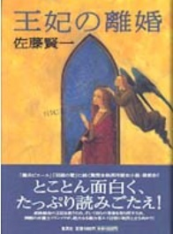
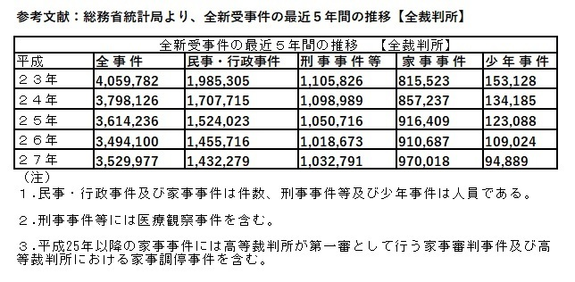
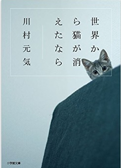
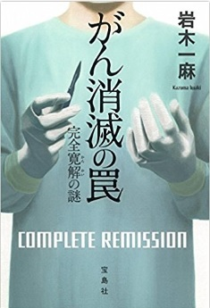
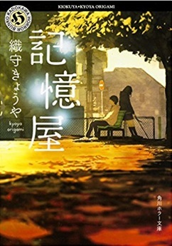
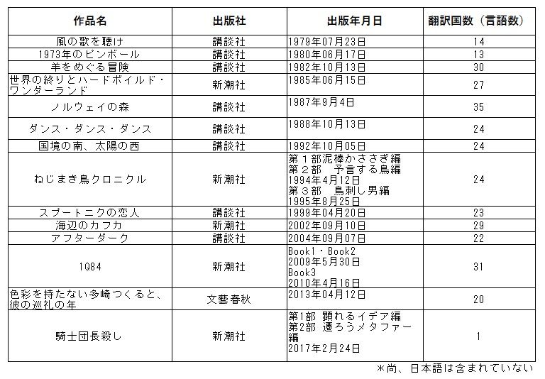
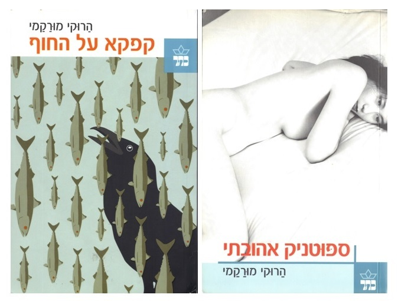
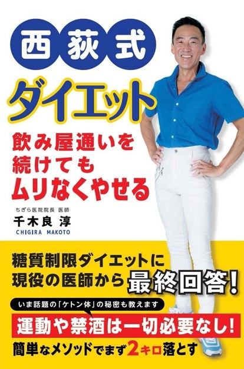
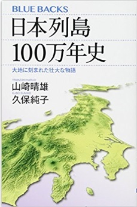
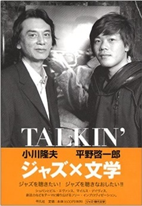

| 「人生の意味」を教えてくれるお薦めの名作８選 | |
| 井戸深志 | |
| Plus One Publishing (2017) | |
井戸深志
本作品は、デビュー作品のシリーズ第二弾『「人生の意味」を教えてくれるお薦めの名作8選～X'MAS Eveの夜に～』です。本作品のシリーズ第二弾を続けて上梓できましたことはデビュー作品が幸運にも読者諸兄からの高い評価をいただいたからでございます。本当に読者諸兄には心より感謝申し上げます。このようなことが起こること自体、信じられないことであり、奇跡が起こったものであると考えております。
さて、本作品でありますが、前作品と同様に読者諸兄のこれからの人生の中で何かの形で役立つ内容であることを強く意識しながら、さもなければ、面白い内容であったと、読後にそう思って頂けるように心がけて執筆をしたつもりです。
今回ご紹介する作品も、すべての作品には深い意味があります。従来の切り口でなく、もしも読者諸兄にとりまして、新しい視点からの切り口がとても面白く感じて頂けたならばとても嬉しく思います。
また、上記にプラス、Coffee Breakは１と２を書きました。概要は以下となります。
① 【Coffee Break１】では、『ヘブライ語に翻訳された村上春樹氏の作品』を書きました。これは前作に書いたヘブライ語の村上春樹氏の本のタイトルは何だったのか、ということから、その確認した結果を書きました。そして、ノーベル文学賞を受賞できない大きな理由の一つとして、翻訳された言語数がどれくらいあるのか、という視点からその要因を推測してみました。
② 【Coffee Break２】では、『1988年クリスマスイブの夜に』を書きました。この内容は私の記憶に残る1988年のバブル時代に出会った音楽と文学のことです。音楽では山下達郎氏の名曲『クリスマスイブ』、文学では村上春樹氏の『ノルウェイの森』が1987年に初めて出会いました。そして、1988年以降、この二大作品は偉大な作品へと成長を遂げていきました。なぜ私がこの二大作品ついて書きたかったのかと申しますと、どの雑誌、コラムにも詳しく語っていないと考えたからです。もしそうであるならば、私が最初に書いてみたいと思いました。
おそらく、上記のことを読むと、読書諸兄の中でも当時の記憶を思い浮かべられる方も大勢いるものと思います。あの時代、ご自身が何をしながら時代を生きていたのか振り返ってみることも素敵な時間の過ごし方であると思います。ぜひ、このCoffee Break２『1988年クリスマスイブの夜に』をお読みになり、バブル時代の楽しい時間を思い出しながら、またバブル時代を経験していない若い人達には、良きバブル時代の雰囲気を少しでも知っていただければと願っております。
話が長くなり大変恐縮ですが、少しだけこの場を借りて、バブル時代の中に存在した二大作品について時系列で書きたいと思います。
1983年6月8日に発売された山下達郎氏の『MELODIES』の中に入っている『クリスマスイブ』は、1983年12月14日に季節限定の3万枚限定（奈良で製造）のレコードとしてシングル発売されました。そして、1987年にJR東海のCMに使われることから全国で認知されることになりました。また、この時代背景はバブルへ突入していき、すべてが派手に、華美に、豪華になっていきました。投資が投資を呼び、まさに資本主義の王道を歩く時代へと世の中は大きく変貌をしていったのです。株価が上がり、土地が値上がり、大きな利益を得る不動産会社が沢山ありました。すべてが右肩上がりとなった勢いがあった凄い時代でした。ちなみにバブルとは泡という意味ですが実体以上に大きくなることを意味しています。そして、バブルが崩壊した理由は国による① 不動産融資総量規制 ② 公定歩合引き上げによりバブル崩壊となりました。
また、バブル時代の文化を見ますと、女性が中心となり創っていきました。まさにこの時代の若い女性達は、80年代からのディスコブームの中、たとえば、時代を象徴したジュリアナ東京では、ワンレンボディコン、ジュリアナ扇子をもちながらお立ち台で踊り狂っていました。その姿を下から覗き込む男性達が印象的でありました。さらに、時代はアッシー君（高級車で送迎）、メッシー君（高級レストランで食事）、ミツグ君（高級ブランドを買う）などと呼ばれた男性を手なずける若い女性達が文化を創っていったのです。もちろん、彼女達にとりましては、本命君は特別な存在でした。要するに、場面によって女性が男性を使い分けていたという時代だったわけです。
ちなみに、ジュリアナ東京は、1991年5月15日から1994年8月31日までウォーターフロントと呼ばれた東京都港区芝浦に開業していました。
一方、村上春樹氏の『ノルウェイの森』は1987年9月4日に上梓され発売した年から百万部を突破した凄い作品でした。当時の文学作品では空前の発行部数を記録したこの作品は、村上春樹氏を一躍大作家へと飛躍させ、人生を大きく変えた作品となりました。
もしかすると、時代が彼を生み成長させたのか、さもなければ、従来の日本文学では理解されなかった新しい文学を、バブル時代という実体が伴わない経済が大ヒットさせたことなのかわかりませんが、とにかく、これまでの文学というスケールを超えたメガヒット作品となったのでした。このことから『ノルウェイの森』は村上春樹氏という作家を日本国民全員へ認知させたわけですが、私が思うことは、世界へ進出するための第一歩となった作品と位置付けています。そして、時代が過ぎゆくごとに、さらにステップアップしていき、まさか世界的な作家になっていくことなど想像できませんでした。まるで世界が時代の寵児を求めていたかのように、その後は素晴らしい活躍を成し遂げ昇り詰めていったわけです。
ここで再度申し上げますが、後に80年代を代表する音楽『クリスマスイブ』と文学『ノルウェイの森』が1987年に初めて出会い、そして、この二大作品はバブル時代が生んだとも考えられます。二大作品は、1988年から偉大な作品へと成長を遂げたことをCoffee Break２で書いています。
最後に、本作品が上梓する時期は、2017年12月18日（師走）前後となると思いますが、世の中はXmasシーズン真っ盛りであり、街にはクリスマスイルミネーションが華やかに飾られていると思います。読書諸兄に於きましては慌ただしい1年の終わりを迎えていることと思います。そのような多忙な中、本作品を手に取ってお読みになっていただいたことで、心穏やかに、そして、本作品の中でご紹介した作品を何かのご縁と考えていただきたいと願います。きっとその作品との出会いは、人生の中において必ずどこかの場面で役立つことになる意味（クリスマスプレゼント同様の価値）があることと願っております。
それでは、今年のクリスマスイブの夜を愛する人、もしくはご家族と、さもなければ、クリボッチとして過ごすのかわかりませんが、いずれにしろ楽しい時間を過ごされることを心より願っております。
2017年12月16日
井戸深志

（著）佐藤賢一、集英社、1999年2月
最初に佐藤賢一氏の『王妃の離婚』を取り上げる。
この作品は1999年直木賞を受賞した。著者は西洋小説を得意としている。この小説はリーガルサスペンスとなっており、物語は裁判という審理過程の中で人間の心理、駆け引きなどが巧みに描かれている。著者は1498年の仏蘭西に焦点をあてた設定で物語を書いているが、そのモチーフ自体は、歴史的な事実に基づいたルイ12世と王妃ジャンヌ・ド・フランスの結婚無効裁判となっている。その着眼点はとても素晴らしい。
そして、この小説の視点は男性の視点から描かれている。もしいまだお読みになっていないのならば、ぜひともクリスマスイブからお正月にかけての休暇時に、ご一読願いたい作品である。すでに読破されているかたも再度読み直していただくことで、初めて読まれた年齢と、いまのご自身の年齢や置かれている環境、立場の違いなどから、考える視点が大きく変わっていることだろうと思う。素晴らしい作品とは、読者諸兄の年齢が変わっていくたびに、新しい学びが多く、それが楽しみ方でもある。
主人公であるフランソワ・ベトゥーラスはパリ大学時代、カルティエ・ラタンにおり、秀才と言われていた。そして、学生時代に「インテリは権力に属してはいけない」という伝説的な名言を残した。この時代の彼には同棲していた女性ベリンダ・カニンガムがいた。そして、彼が27歳の時、その彼女と結婚をしようと考えていたが、運命はかなわなかった。
時が流れて、フランソワが47歳になった時、地方にいる弁護士として働いていた。彼は国王夫妻の離婚裁判が行われることにとても強い興味をもっていた。
なぜなら、かつて彼は、前国王・ルイ11世（王妃ジャンヌの父）によって大学を追放されたからである。今回の法廷では、その暴君の娘である王妃ジャンヌが出廷することがフランソワに強い興味をもたせた。彼にとっては娘であろうが、仇敵を見たい衝動に駆られていたのだ。そして、裁判が始まった。王妃ジャンヌは裁判で否定をしていたのだが、その裁判というものは意図的に仕組まれたものであることが、彼には感じとれていた。仇敵の娘が落とし込まれることに対しては痛快にも思っていた。しかしながら、弁護士としてみれば、理にかなわないと感じるところがいくつかあったことが心に残った。
離婚裁判は何回か行われた。そしてある日裁判の終了後、彼は学生時代の後輩であったジョルジュ・メキアに声をかけられ偶然に再会をした。ジョルジュはソルボンヌの副学監となっていた。また、この時に学生3名を連れて来ていたのだった。学生の名は、ロベール、ミッシェル、フランソワ・カンニンガムだった。
その晩、ジョルジュ達と一緒に、この裁判の行方について話し合った。やはり、意図的に陥れる作為ある裁判だという話にまとまった。もはや裁判の行方に興味がうせてしまったフランソワは早く帰宅することにした。
フランソワはその帰る途中、元恋人だったベリンダの弟と再会した。彼は近衛隊長のオーエン・オブ・カンニンガムになっていた。そして、フランソワは王妃ジャンヌのところへ強制的に連れて行かれてしまった。彼女は、ベリンダが仕えてくれた時、フランソワの話をよく聴いたといった。そして、彼女はフランソワへ弁護を依頼したがフランソワはその話を拒んだのである。
数日後、再び裁判が始まった。すでに形勢では王妃ジャンヌが不利な状況であった。そこで彼女は、突然新任の弁護士の起用を宣言した。法廷はざわめいた。そして彼女は、フランソワを指名したのであった。彼はかなり驚き、心の中に葛藤を抱えつつも、新任の弁護人となる決意をしたのだった。
フランソワは、いち早く緻密な戦略を練り、すでに不利な状況にあった形勢を逆転していった。ここから物語は奇想天外な方向へ進展する。物語の結末は衝撃的であるので、ご一読することにより物語の結末を愉しんでいただきたいと思う。
神学VS政治
国王VS民衆
真実VS虚偽（法廷内）
① 「インテリは権力に属してはいけない」と言ったフランソワ
この言葉の意味を考えると確かに権力に対する対抗勢力がなければ、独裁国家になるわけであり、国家では監視するための良識ある対立の構図が必要と考える。人間が作り出す社会、組織というものは、独裁的になるか、セクショナリズムに走る傾向があることから、近代国家では国民も、国家を運営している政党と監視機関となる政党を育てることが重要であろう。今回日本で実施された衆議院選挙（20171022）を見ると、立憲民主党が伸びた理由にはこういう背景があったのだと推測する。つまり、立憲民主党には、自民党を監視する機能としての役割を求めているのであろう。とはいえ、野党が与党のすべてを否定するのではなく、国民、国家にとり、本当に重要な法案だけは、お互いに協力をしていっていただくことを願うばかりである。また、マスコミであるが、真実を伝えることが義務であると前作品の中でも書いたが、マスコミも極端に情報操作をするように思われる時がある。とにかくバランスよく国民のために真実の情報を提供して頂ければと願うばかりである。なぜなら、本作品を読むと理解できるが、特に国家を運営する人、マスコミで働く人達ほどインテリと呼ばれる人種である。この人達は情報をコントロールできる立場なので、正しい情報を提供していただきたいと思う。
そこで、フランソワが言った「インテリは権力に属してはいけない」という言葉の本来の意味を考えて現代にあてはめてみると、つまりは、監視機能のことを示しているのではないかと思う。すなわち、野党とマスコミは、フランソワの言葉に当てはまると思えた。そして、エリートとは何かと考えてみた。エリートとは、国家や企業を担う人材のことであり、そのほとんどが一流大学で学び、その後は、インテリの職種に就く人のことである。しかし、必ずしもエリートだからと言って、すべての人が出世できるのかというとそうでもない。そもそも出世＝人生の成功者でないと思うが、エリートとはリーダーになる確度が高いわけであるので、やはり基本的な資質としては、人間同士のお付き合いができなければリーダーになれないと考える。
つまり、人間性が備わっているかどうかが大きな分岐点となるからだ。それらは、人を受け入れる度量、寛容性があれば、人は自然と集まり慕って来る。それを判断できる場面とは、状況が厳しい場面であるほどリーダーとなる人の本性が出ると考える。そして、特に、立場ある人間が部下となるものを注意・指導をする時には冷静に説明を行い理解させる論理的な話し方と愛情をもった人間性も必要である。もし理不尽で感情的な話し方をされた場合には、必ずシコリが残るため人は離れていくからだ。きっと伝え方にも直接的、間接的に行うことなどを考えて、色々な話し方があるはずだ。また、必ず相手の人格を誹謗中傷しないように特に話し方には気をつけなければならない。
なぜなら、人間関係は、もし一度掛けたボタンをはき間違えると非常に難しい関係となるため、上司となるものは仕事に支障が起こらない程度に冷静に話ができるコミュニケーション能力（人柄も含む）をもち、コミュニケーションを常日頃からもたなければならない。よくあるケースだが、お互いに些細なことで、感情的になることである。最近はメールが主流となったために余計にメールでの言い合いは感情的になりやすいので、直接話すことが重要だと思う。こういうことができない人がいるため、上司ならば、部下に配慮することで話の場を作ることが重要だ。
すなわち、賢い上司ならば、揉め事にしない、感情的なシコリは残さない、どちらかというと、漫画の「あしたのジョー」のようなノーガード戦法の上司になるかもしれないが、耐えることになることの覚悟が必要となろう。
なぜなら、上司は感情的になれないことから、冷静に自らの感情のコントロールをしなければ、すべてが上手く行かなくなるからだ。物事を進めることを優先するならば、とくかく話を聴く、そして、毎日少しの時間でも話をすることの積み重ねから信頼を獲得することしかないと考える。また、上司は人として、常に感謝の気持ちを口にして表すことが人間関係を良くしていくと思う。人を大切にする気持ちを部下に感じてもらえるならば、必ず上手く行くはずだ。さらに言えば、部下に上手く使われるような上司となることで、やる気を出してもらったほうが良い関係が構築できるのではないだろうか。上司でありながら使われるのである。そうして、仕事をもっと働きやすい環境へ作り上げていくことで信頼関係がある上司と部下になるものと考える。しかし、時代は変わり、現代の上司と部下という関係は、まるで現代の夫婦（恐妻に近い）関係なものとなり大きく変化したものである。
最後になるが、欧米のエリート教育はどういうものかと少し調べてみた。（一塊でまとめてしまうのは申し訳ないが）それは、哲学、倫理学、論理学、心理学、という科目を必修科目として彼らは学んでいる。これには意味があり、哲学は人間が生きていく上で学問では割り切れないことがある。そのために新しい回答を導くもの、倫理学は人として善悪の判断、論理学は思考や論証の組み立て。つまりはディベート。心理学は心、行動を認知し分析して人を理解することである。将来の日本でも上記のような科目を高校大学で学ぶ時期（柔軟性のある）にこのような機会（教育）を与えることで、世界で活躍できる日本人が生まれていくのではないだろうかと思う。現在の日本では、エリート教育は存在していないと考えるからである。
② 法廷審理のかけひきは心理戦であり緻密な戦略が必要である
本作品を読むと法廷審理の戦略ということの重要性を学ぶことができる。しかし、日本は訴訟社会ではないために大半の国民がピンとこないかもしれない。もちろん、日常生活の中で訴訟を体験された方には、裁判という面倒なことが、いかに労力と時間を費やしているのかということを痛感されているのではないだろうか。本作品の中からは、法廷審理の戦いかたには戦略が必要であるということが理解できる。
③ モンスタークレーマーが生まれた背景と訴訟問題とは
本作品の内容とは少し話題がかけ離れてしまうが、本作品の物語は弁護士という業務の視点から書かれているため、同様に現代の弁護士の業務内容とリンクする問題としてネット社会におけるモンスタークレーマーへの対処ということを考えてみた。まず始めに、なぜそこまでクレームを強く言う人種が現れたのかということだが、この背景には、消費者の立場を強くさせたPL法（製造物責任法）の存在があると考えられる。このPL法はとても素晴らしいのだが、それを上手く利用することからモンスタークレーマーが生まれたのではないかと推測する。さらに、ネット社会の弊害ではあるが、モンスタークレーマーからの悪意ある情報の流布を危惧することも要因となっているのかもしれない。しかし、確かに製造責任を明確にすることは重要であるが、物事に対してはすべてバランスがある。たとえば、モンスタークレーマーのようにキレる、怒る、怒鳴ることで、人や企業を恫喝していくことから、結局何かを得ていくことが正しいと考えてはいけない。たとえ問題が起こったとしても、感情を抜きにして冷静沈着に話をすることを心掛ける人物であって欲しいと願うばかりである。また、その問題を、悪意をもって外部に情報発信してはいけないと思う。いずれにしても、実際には、モンスタークレーマーからのクレームから訴訟へいくことはほとんど皆無ではないかと思っている。これは後程、資料を見ていただけると理解できる。
④ 裁判数の増減から新人弁護士の働き方とは
先ほどにも書いたが、モンスタークレーマーが多数いるならば、この最近の裁判数は右肩上がりになっているものと思う。しかし、実際に訴訟の数を調べてみるとその逆に減少傾向にある。つまり、モンスタークレーマーは訴訟をしない傾向があり、一時的な感情でクレームをつけて来るものと考えられる。そして、裁判の数が減ることによってどのようなことが起こっているのかというと、弁護士の数は増えたが、仕事が少なくなっていることから弁護士業も大変な時代に入ったということが言える。

最近では、新たに資格を取った新人弁護士が大手の事務所や中堅の事務所に就職ができない状況となり、十分な経験を積める機会がないまま独立するケースが増えているという。このことから質の低下につながることが懸念されていると聴くことがある。新たな弁護士のビジネスのルートとしては、企業内弁護士を企業が置くケースが増えているため、弁護士の企業への就職という道もあるようである。ちなみに、弁護士の仕事内容だが、大きくは民事事件と刑事事件を取り扱っている。三大国家資格である弁護士資格を取得しても生きていくのは大変難しい時代になったのである。
⑤ 刑事事件の痴漢冤罪から身を守ること
話は飛躍するが、男性読者に関係する最近の刑事事件で注目されている痴漢冤罪について調べてみた。
痴漢冤罪ほど、いまの世の中で怖いことはない。痴漢冤罪とは刑事事件の中に入るものである。男性にとってはとても恐ろしいことで、リスク回避をするための方法を以下に書いておく。ぜひ参考にしていただきたいと思う。
【身を守る方法】
・満員電車に乗る時間を避ける
・満員電車に乗る時には女性から離れる
・満員電車の中では両手を挙げる
・両手を挙げている時に万が一の時に備えて事前に第三者となる人を探しておく
・もし誤解されてしまった場合には、弁護士を呼ぶことが重要となるので、あらかじめ、探しておいたほうが良いかもしれない。知人が弁護士ならば良い。
さもなければ、保険があるらしく、弁護士を呼べる保険であるそうだ。
・駅員室に行った時点で逮捕される可能性が高くなるためいかない。
以上のことは、どこかのテレビ局の特集で言っていたことを書いたものであるが、サラリーマンの場合には、通勤電車が常に満員であるために、このようなことを避けることはできないと思う。ここで取り上げたのは本作品に弁護士が出て来ることから最近話題になっている痴漢冤罪について調べてみたわけである。私見であるが、上記のようなことをしてまでもリスク回避しなければいけない世の中がおかしいということを考えると、朝と夕方の通勤ラッシュの時間帯2～3時間だけに限定して、男女別々に車両を明確に分ければ良いものと考える。これを実施すれば、世の中の男性は、あえてこのようなリスク回避策を考えることから解放されるであろう。
⑥ 中世においては宗教が憲法そのものになる
中世とは、ローマ帝国分裂の4世紀末から15世紀の東ローマ帝国の滅亡及び16世紀のルネサンス及び宗教改革に至る時代となる。（参考文献：デジタル大辞泉）宗教に携わる聖職者達が政治権力を握っていた時代であった。視点を変えれば、人間を管理する一番簡単な手法は宗教の信者にしてしまうことと言われているため、すべての権力が聖職者に集中していた時代であった。歴史の流れをみると、ルターによる宗教革命により国家へ権力が移行していったのである。
⑦ どの時代も離婚には結婚よりも数百倍のエネルギーが必要
まず始めに、1498年に裁判により離婚が成立した事実は驚きである。
本作品は離婚をテーマにしたものであるが、この中世の時代に離婚があったという事実は衝撃的であった。そして、どの時代もそうであろうが、離婚するためにはとても大きなエネルギーが必要であろう。現代社会では、離婚するためには、結婚の数十倍のエネルギーを必要とすると言われている。離婚した人達のコメントを聴いたり、読んだりしていると、離婚に費やす時間ほどマイナスな時間となり、いかに辛い時間を耐え忍ぶかということを知ることができる。しかし、その痛みを超えてまでも離婚へ踏み切りたいと思わせるほどの強い決意があることを思うと、結婚した理由がどこにあったのかということを考えてしまうわけである。好きで結婚をして、一緒に生活をしてから、性格が合わないからとすぐに離婚するのが現代である。成田離婚と言われるのは、ハネムーンから帰国したと同時に即離婚をするということである。こうなるとさすがに結婚する意味がわからない。そのため、結婚を考えている多くの人達は、結婚することにリスクを感じて慎重になってしまうことになる。だったらしないほうが良いと考えてしまうわけでもある。しかし、もし可能であるならば、人間も動物であるため、種を残すという本能を優先するべきであろう。皆さんがどこかで素晴らしい伴侶を見つけることができることを願っている。
世の中は常に価値観が変化するために、人間の生き方の選択肢が拡がることは良いことだと思う。そして、このことにより未来の人間社会にどのような影響を与えるのか、その時にならなければわからない。結婚・離婚ということは、一人ひとりのかけがえのない人生であるため、ご自身が納得した人生を過ごすことが大前提だ。しかしながら、社会的には国家のあり方にも大きく影響することにもなるのでとても難しい問題である。
⑧ 現代社会では３分に１組が離婚、戦後の社会変革による価値観の変化
現代社会では、確かに3分に1組が離婚している時代である。なおかつ、結婚しない男女が多々いる時代へと変わっている。戦前の日本ならば、本当にありえないことであったが、おそらく、結婚することの意味が社会構造的な変化により変わってしまったのであろう。この原因を調査していくと第６章に書いた『本懐に候』のテーマである大きな社会変革に通じることになる。まさに戦後の社会体制の変化により、結婚する価値観が大きく変わったものと推測する。たとえば、戦前は家族同士の結びつきという視点からの見合い結婚が主流であったために、離婚することなどは考えられなかった時代であった。しかし、現代では当事者同士の恋愛が主流となり、家対家の結婚ではなく、個人対個人の位置づけに変わったため、いつでも離婚が可能となったわけである。さらに、戦後には女性の地位向上による社会的な自立などや、様々な要素が複雑に絡み合っており、収入を得られる女性が増えたことから、一人で生活できる女性が増えた。このことにより、結婚することの意味というものが大きく変わったのであろう。
⑨ 将来の社会、日本人の人口減少から起こる様々な視点から想像する
将来の社会を考えてみたいが、今後結婚しない男性女性が益々多くなる社会はどうようになるのかというと、個人的にはまったく想像がつかないのである。しかも人口構造も逆ピラミッド現象が進んで子供がより少なくなり、日本人が減少していくわけである。SFの世界ではないが、50年、100年後、200年後には、日本人が人間という動物の種類の中で絶滅危惧種に指定されるかもしれない。進化論的な視点から考えると、もしかすると日本人の体が生存の危機から生き残りをかけて男性・女性の体の一部を進化させるのかもしれない。さもなければ、医学的な見地から、国家が体外受精による人口増加を推進していくのかもしれない。
そして、その未来にあるのは、ロボット社会になり、もしかすると人間が人工頭脳に支配されていって、逆にロボットのペットになって繁殖管理をされる時代になっているのかもしれない。以上のようなことは、あくまでもSF的な発想なので現実味がないことは百も承知である。
常識ある考えならば、動物は生命の危険を感じると繁殖をして遺伝子を残していくものである。たとえば、3.11の東日本大震災のあとには、結婚する男性女性が増えて、出産率が高まったと言われている。このようなことで出生率が高まるのでなく、もっと自然な形で人口が増加することを早く国家が具体的に考えて政策を打ち出す必要があると思う。やはり、経済的な補助を一番優先させるべきなのだろう。生まれた子供への教育費にはとてもお金がかかるからだ。
⑩ 生命の危険に置かれた時の動物の生物学的な視点から考えてみた
上記には動物は生命の危険を感じると繁殖をして遺伝子を残していくものと書いたが、もう少し掘り下げて生物学的な視点から書いてみたい。
まず生命がどのように生まれたのかについては明確にはわかっていない。しかし、単細胞生物が誕生し、その後、多細胞生物が誕生した。多細胞生物が生まれた後に、雄と雌が現れて来るが、これは環境の変化などから生き延びるために多様性を作るためと言われている。
この多様性を作る仕組みは動物と植物があてはまる。たとえば、人間を考えると、基本的には染色体は46本である。男性と女性は、それぞれ2の23乗＝約840万通りをもっているため、生まれて来る子供の染色体の組み合わせは、約840万×約840万＝約70兆通りと言われている。つまり、環境の変化に対して生き延びるための適応性はかなり高いものと考えられるわけである。しかし、人間の場合には、結婚する、しない、などの様々な問題を抱えていることがあり、必ずしも子孫を残すということはないので、とても複雑な動物だと考えられる。
現代の日本では、結婚しない男性女性が多くなっているために、もしこの比率が時代の推移と併せて高くなっていけば、生物学的な視点から言えば、多様性をもって環境に適応している組み合わせができなくなる。それゆえ、50年後、100年後、200年後の日本人はどのようなことになっているのかと心配だ。人口が減少することは明確である。そして、あらゆる環境に適応していきながら生き延びていくことが多細胞生物の特徴であるため、現代よりは数少ない未来の日本人に大いに期待したいと思う。
（参考文献：『池上彰が聞いてわかった生命のしくみ 東工大で生命科学を学ぶ』著者：池上彰・岩崎博史・田口英樹、朝日新聞出版）
⑪ 離婚手続きの種類、そして、夫婦の理想の姿とは
本作品のテーマである離婚ということから以下のことを調べてみると、3種類あったので参考までに記載しておく。
離婚には、協議離婚、調停離婚、裁判離婚がある。本作品の内容は裁判離婚があてはまる。つまり、基本的に話合いではまとまらないために、「法律上の離婚原因」を争点とした裁判が行われるわけである。ここから、離婚に至らないように、夫婦の理想の姿を考えてみた。
夫婦の理想とは、何歳になってもお互いをリスペクトする関係であることだと思う。まず夫婦とは、所詮他人であることを理解していることが重要であり、その上にあって、お互いに片目をつぶることが関係を良好に維持できるのではないだろうか。以下は男性の視点からであるが、たとえば、日常生活でよくあることは、妻から毎日毎日、クレームばかりを聴かされることだ。これほど嫌な気持ちにさせられることはない。これは夫婦の価値観の違いが大きいからだと思う。言うほうも言われるほうも、どちらにも言い分があるが、お互いに改善されないことから不満とかなりのストレスが溜まっていく。これこそ精神衛生上よくないことになることをお互いが理解するべきである。この解決方法の一つとしては、お互いが年齢を重ねてしまい、お互いに性格や生活の習慣などをいまさら改善できないとあきらめることで解決はできないのであろうか。「あきらめる」ということが改善につながらなければ、ストレスをお互いに抱えて老後を過ごしていくだけになる。そうした事情から、各々が人生で何を優先するのかという最終判断に依存することになるのだろう。
この「あきらめる」ことの考え方の基準となるのは、やはり、夫婦として、これまで何十年も一緒に暮らしてきたわけで、基本的な考え方や価値観が違うことを、お互いに理解する寛容な心をもつべきだと思う。「あきらめる」ということが必ずしもすべての人達の解決策にならないとは思うが、お互いに必要最低限度のことだけを話合いで決めて、あとは干渉しないというスタンスをもつことも解決策の一つであろう。
また、ある日のネットニュースには定年後に夫が自宅にいると、妻のストレスが増えるという記事が掲載されていた。このような記事を読むと私はとても同情をしてしまう。なぜなら、夫婦がお互いにストレスを抱えて自宅にいれないことが信じられないことだからだ。特に男性は、再就職をしていない場合には、気をつかって図書館へ行く人が多いそうだ。これはとても不憫であろう。また、50歳を控えると社内の立場がとても難しくなることを、家族は理解する必要があると思う。
具体的に言えば、男性は50歳を過ぎれば、会社でも仕事中心の立場にはなれないことが増えていき、現代では役職定年もあり、段々隅に追いやられていくものなのである。会社の中でも、男性がいる場所もなくなっていくことの寂しさを家族も理解するべきではないだろうか。しかし、一方では、出世街道を驀進している男性もいる。こういう方は社内でも年齢に関係なく主役のままで残れるわけである。そういう方はごく一部の人であるが、いずれ退職は必ず訪れるものである。このように男性が50歳を超えてから社内で置かれる立場の変化を理解できる妻は世の中にどれくらいいるのであろうか、と思う。
したがって、もし可能ならば、男性の定年後の人生は、好きな生き方（仕事を含む）を選択させてあげることができることが良い夫婦関係となるのではないだろうか。それは、もしかすると定年退職後には、しばらく夫が家にいるかもしれない。あるいは、夫が再就職をしているかもしれないが、その時はやりたい仕事についてもらうことが良いのではないかと思う。しかも、男性は女性より平均寿命、健康寿命が短いことから、もし妻が寛大な心で男性の残された時間を楽しく生きて欲しい、と考えてくれるならばきっと男性は幸せであろう。なぜなら、女性はいくつになっても、たとえ夫に先立たれてもきっとそれなりに楽しく生きていけると考えるからである。
いずれにせよ、常に夫婦間で良いコミュニケーションがもてることが最善である。もし60歳まで夫婦として人生を一緒に歩んで来たのであれば、その歴史、つまり家族の思い出を共有しているからこそできることがある。それは、お互いを気遣える、相手を傷つける発言をしない、態度が横柄でないといった、お互いにストレスを与えないように精神衛生に良い関係を築くことこそが、残りの人生をストレスなく、楽しい時間を過ごせるのではないかと考える。
私見であるが、理想の夫婦の"季節"とは、人生の春から夏にかけては恋が存在してお互いに燃え、秋から冬の季節にかけては目に見えない愛、静かなる愛が存在するものだ。そして、冬になると、お互いをいたわる気持ちと感謝の気持ちをもって、命が尽きる前に本当に結婚してよかったと感謝できる夫婦であることではないかと考える。そのようなことから、夫婦の最終形はお互いに"空気"になることだと考える。そして、必ず来世でも出会い一緒になりたいと考える夫婦は理想である。

（著）川村元気、小学館、2014年9月18日
本作品の骨格にあるのは、ユダヤ教やキリスト教にある旧約聖書「創世記」において、7日間で神が天地創造した出来事をモチーフとしているように思えた。なぜなら、余命宣告された主人公は、残された7日間で悪魔と取引をして寿命を延ばしていくからだ。この寿命を延ばしたことから、日常の生活を過ごすことへの感謝の気持ち、また何気ない毎日を生きていることの幸せを痛感していく物語だ。
ちなみに、本作品の著者・川村元気氏は映画プロデューサーであり過去有名な作品には『電車男』がある。
2016年には『世界から猫が消えたなら』と『君の名は』を映画化した。『君の名は』は世界的大ヒットした作品であることは周知のとおりである。
余命宣告された主人公の、7日間に起こったことが書かれている。
月曜日は、悪魔が来て寿命を延ばすために何かを消去することの取引をした。
火曜日は、電話が消えた。そうすることで、母親の口癖を思い出していた。
「何かを得るためには何かを失わなくてはならない」
要するに誰かの幸せは誰かの不幸の上に成り立っているということだ。
電話が消える前に僕が最後に電話をしたのは大学時代の元彼女だった。
水曜日は、映画が消えた。そのことによって映画のストーリーを思い出した。
「ほとんどの大切なことは失われた後に気づく」
どんなものにも存在している意味があるからこそ、「あってもなくても良いもの」がこの世界にはとても重要ということにもなる。
木曜日には、時計を消した。つまり時間の感覚がなくなった。
これまで過去から現在を経て無限の未来があったが、余命宣告されたことにより、未来がこちらへ向かって来る感じとなった。
金曜日は猫を消すことはできなかった。猫の存在を考えてみた。猫は人間が知りえない自分の姿、未来、そして死を知るために猫といるのではないかということを感じた。つまり、人間が猫を必要としていると考えた。また、母親からの手紙を元彼女からもらった。内容は、「私が死ぬまでにしたい10のこと」だったが、「あなたの素敵なところ10」に変わっていて涙を流した。
土曜日は、世界から僕が消えるので猫は消さなかった。自分の死を自覚した時から生きる希望と死への折り合いをゆるやかにつけていくものである。沢山の些細な後悔や、叶えられなかった夢を思い出しながら、後悔だらけの人生に満足する。なぜなら、それが自分の人生だからだ。
日曜日は「さよならこの世界」ということであるが、大切な人やかけがえのないものに気がつくこと、生きることの素晴らしさを知ることが重要である。
そして、すべての人間にとり寿命は未知なのである。
生VS死
① 会社はあくまでも人生の通過点である
本作品を読み終えると、人生の時間の使い方ということを考えさせられた。そのため、ここでは、すべて時間の使い方について述べたのでご参考いただきたい。まず始めに、人間は生まれた時から死に向かって一方通行の時間を生きている。しかしながら、時間という速さは年齢によって感覚が違う。それは、若い時代の過ぎ去る時間と50歳以上を越えてからの速さは違うということになる。いつ人生の終わりが来るのかもしれないということだけで考えてみると、人間の死は誰でも平等に訪れるものである。単純に残り時間の量で比較するとするならば若い人達が有利であるのは当然だ。
本作品からは、死から逆算することの大切さを学ぶことができる。
また、上記の逆算をすることの大切さから、定年後の老後の時間についてネットで調べてみたところ、とても面白いデータを見つけたのでご紹介したいと思う。
「節約・ライフプラン」というホームページ
（http://www.setsuyaku-lifeplan.com/expert/08/0321.html）を読むと以下のことが記載されてあった。
たとえば、あくまで単純計算ではあるが、サラリーマンとして20歳～60歳まで働いた総労働時間と定年後の60歳～80歳までの20年間1日あたりを11時間として算出すると約8万時間となり同じになる。つまり、老後の時間は8万時間をどのように過ごしていくのかということを事前に考えて準備をすることにより、その生活が色艶
やかで、豊かな生きがいのある時間として過ごせることになるということだ。
もし何も準備できていなければ、残りの人生はとても寂しいものになる。老後必要となるものは「お金、健康、生きがい」ということであろう。もちろん、それは当該ホームページでの調査項目となっている。そこから導き出された考え方としては、充実した豊かな老後を過ごすためには、各年代ごとに以下の同じ質問を繰り返ししてみることが重要であるということだ。
たとえば、50歳を超えたら自己問答をしてみると良い。それは、
・自分に何が残っているのか？
・一人の人間として、あらゆる人達との交流を重ねてこられたか？
・自身がどのような人間として、周りから見られているか？
・人との出会いを積み重ねてきたことを大切にしてきたか？
などということを確認してみることが重要である。
このような自己問答を、30代、40代、50代の時にでも行うことで、次の年齢に向かって目標が明確になるのではないだろうか、とも考える。
たとえば、次に目指す目標、習得するビジネススキル、人間性を高める方法などすべて含み、人生のゴールを会社に置くのでなく、その次のステージまで考えることが重要だ。現代社会では、こういう生き方がサラリーマンでも必要な時代となったと考える。ご自身の人生をどのように生きたいのかということを考えることにより、転職、会社設立などへ挑戦するきっかけとなることであろう。
② いつまでも人との出会いを楽しむ
前作品の中にでも書いたが、人生は新たな出会いを求めていくことこそが次につながる大きなチャンスとなる。なぜなら、人との出会いこそ、人生を大きく変える可能性があるからだ。だからこそ、人生という大きなスパンで捉えるべきである。
そして、人との出会いがあるからこそ、たとえば、いままでご自身が得意であることのスキルを磨いておくことで転職が可能となったりする。また知人を通して間接的に話が来る時もあるだろう。これには年齢は全く関係がないと考える。そして、年齢が上に行くほど、実は人間関係の縁で再就職が可能となるケースが多々ある。もちろん、スキルがその会社の求めるニーズと合わなければいけないことが前提条件であるが、話が来るということは、スキルを認められていることになる。あとはタイミングさえ合えば、定年後の転職がすぐに可能となるわけである。このことから、人生は死ぬまで出会いを求めることが仕事でもプライベートでもとても重要で、それが楽しいということになる。
但し、出会いがあったとしても、人と上手く行かないことがあることだけは忘れてはいけない。もしそのような場合には、我慢することなく自らが身を引くことで、将来のストレスを抱えない生き方とすることが最善であろう。人間の性格などは、一緒に何かをやらなければわからないものである。だからこそ、初めて気づく時もあるが、もしストレスを抱えることがあるならば、定年後はストレスを抱えて働かなければならないならば、次の場所を考えるべきではないだろうか？それは個人の生き方になるものであるが、そういう選択もあっても良いと考える。上手く乗り越えていただくことを願うばかりである。とにかく、人との出会いはとても刺激を与えてくれるが、同時にリスクもあることを含んで、自分にとり気持ちよくお付き合いができる人物だけ長くお付き合いをすれば良いと割り切る年齢であると考える。
③ 現在置かれている環境を自らが意識して変化させる
仲の良い友達も時代ごとに変化している。学生時代に良かった友達とはいまでも仲良く話はできると思うが、実際には会う頻度が少なくなった経験は誰でもおもちのことだと思う。これは置かれた環境の違いが原因となっている。たとえば、学生時代には、クラスが変わった、学校が違ったことから離れてしまった経験をもつ人は多い。
しかし、同時に、その時代には、常に新しい友達ができて、充実した時間を過ごしていたのではないだろうか。また、就職した時も同様であったと思う。さらに就職して社会人となると、新しい環境となり、新しい出会いも数多くなる。社内だけでも同期、先輩、後輩など、同年代の人達はもとより、違う年代の人達との交流がはじまる。それは、結婚することも同様で、家族として付き合っていく人達が現れて来るのである。
このように人生の中では、それぞれのステージごとに、出会う人、付き合いをする人が違っていき、そのステージごとに仲良くなる友達は変わって来る。そして、その仲良くなる人達との出会いを求めて、前述のように、人間は、死ぬまで出会いを求めることのほうが人生を楽しめるのではないかと思う。しかし、所詮、「類は友を呼ぶ」範囲で新しい人達との出会いは限られるため、それを大いに楽しめることが大切ではないかと思う。
ただし、出会いも考えさせられる時もある。たとえば、私がときどき体験することだが、仕事で出会う人の中には、「私はこういう凄い人を知っている」と自慢げに話をする人がいる。しかし、実際ほとんどの場合は、単に名刺交換をしただけの間柄であることが実に多い。本当に仲の良い人の場合には、最初からそのような虚勢を張るようなことは言わないだろう。そして、たとえば、具体的に仕事を進めるために、その凄い方へのアポを依頼すると、なかなかアポがとれず、仕事の話が具体的に進展したためしがない。つまり、世の中には、「虎の威を借る狐」がいかに多いかということである。ビジネスを有利にしたいため、自分には凄い人脈があると思われたい気持ちはわかるが、これに騙されてしまう人達も多々いるのではないかと思う。確かに人との出会いはとても楽しいのであるが、色々なケースがある。つまりは、上記にも述べたが仕事もプライベートもご自身にとって気持ちよくお付き合いできる人かどうかを考えることが重要なのである。
④ 「死ぬまでにやりたいこと10のこと」のリスト
本作品の中に書かれていた「死ぬまでにやりたいこと10のこと」のリスト作成を読者諸兄もご自身で行えば、かなり時間を効率的に使うことができるのではないかと思う。
なぜなら、年を重ねていくと、若い時と同じようなパワー、体力があるのでなく、健康を維持しながら、経験に基づき少ないパワーと体力をどこで使って、楽しく仕事をしていくのか、趣味を昇華させていくのかなどについて考えていくことがとても重要だ。
その一方では、人生はすべてのことを具現化できるわけではないことも理解しておきたい。したがって、悔いのないように生きるということは、すなわち、悔いが残ることを含めて、そのすべてが自分の人生だったと認識することなのである。

（著）岩木一麻、宝島社、2017年1月12日
本作品は2017年「このミステリーがすごい大賞」を受賞した作品である。
著者は、過去に国立がん研究センター放射線医学総合研究所に在籍をしており、現在は医療系出版社に勤務している人物で、医薬品業界を熟知している。したがって、この内容は、同じ業界で働く人達にとっては親しみやすく、読みやすい作品だと思う。
ご存知のように「がん」は、現代では最も亡くなる方が多い疾病である。また、二人に一人は生涯の中で「がん」に罹患すると言われている。このことから、完全寛解という言葉の意味に、敏感に反応してしまう人達は多いのではないのだろうか。
完全寛解という言葉を聴いてしまうと、そのトリックを解き明かすことに興味をいだいてしまうのは、この医薬品・医療機器業界で働いている人間、いやヘルスケアと呼ばれる業界で働いている人達ならば、とても強い興味として惹かれてしまうと思える。つまり、これはある意味、職業病なのである。
夏目典明と羽鳥悠馬は高校時代から20年を越える友達だ。現在は二人とも日本がんセンター研究所に勤めている。この病院には、夏目が主治医として担当をしていた患者がいた。江村理恵、35歳、肺門部原発扁平上皮がん、主要転移四箇所、ステージⅣ
aだった。しかし、彼女は延命効果の抗がん剤治療を拒否して、慈恩会の自然食品による治療を選択した。その2ヶ月後、再び夏目のところへ受診、再検査を行ったところ病巣は消えていた。ここから物語は始まる。
主な登場人物について簡単に説明する。
夏目は、東都大学医学部腫瘍内科講座教授西條征士郎の弟子であった。羽鳥は基礎講座の公衆衛生教室に在籍しており統計解析を得意としている。森川は高校の同級生であり保険会社（大日本生命）に勤務。宇垣は湾岸医療センターの呼吸器外科医である。
浦安にある湾岸医療センターは、がんの早期発見を目指した施設であり、費用は高額だが政財界の人間や官僚、芸能人などの富裕層を主に対象とした病院である。宇垣玲奈はこの病院の呼吸器外科医として勤めている。彼女は厚生労働省官僚柳沢昌志が悪性の肺腫がんであることを発見し手術を成功させた。彼女はこの病院で行うがん治療を「オーダーメイド治療」と呼んでいる。たとえば、それはがん治療方法でいうと、一般病院と同じところは、細胞の性質の見極めは病理検査から、がんに関連するいくつかの代表的な遺伝子を調べることから治療方針を決めることであった。次に、ここから患者から採取した、がん細胞を細胞培養し、その性質を調べることが専門病院であると考えていた。そして、このように詳細に患者のがんを調べた上で、治療方針に基づき、厚生労働省官僚柳澤の悪性の肺腫がんを発見し手術を成功させることが、できたわけである。
一方、大日本生命では、最近の不思議な連続した出来事に疑問を感じていた。森川の部下である水嶋るり子のところへ、リビングニーズ特約による死亡保険の生前給付で3千万円の請求が来たのであった。これで4件目である。このことから何か不正があるのではないかと推測をした。しかしながら、これまでの3件には不正の痕跡は見当たらず、リビングニーズ特約で保険金が支払われた。
ここから、夏目、羽鳥が中心となり、さらに森川が絡み、「なぜ突然、がんが消滅するのか」という疑問について仮説を立て解決をしていく。そして、この完全寛解に絡んだキーパーソンとなる人物が、何を望み、何を失い、何に苦しんだのか、その結果がすべて解き明かされていく。すべての終わり際に言った宇垣の一言には戦慄が走る。
寛解VS延命
① がん治療における標準治療について理解できる
標準治療とは、「手術」、「化学療法（抗がん剤）」、「放射線療法」が三大標準療法となる。最も有効的な療法は、どうしても手術でがんを取り除くことができれば完治するが、それぞれ弱点もある。
・「手術」では、がんをまき散らす可能性や取り残しの可能があり、遠隔転移には効果はなく、機能や臓器を失う。
・「化学療法（抗がん剤）」では、薬剤耐性により効果が失われる。また、強い副作用で体力を弱めてしまうなど、期待するほどの効果が得られない。
・「放射線療法」では、遠隔転移には効果はなく、正常細胞にもダメージを与えてしまう。また、難治性のがん細胞が残存する可能性もある。
以上のことから、よく言われていることは、がん患者の5年生存率は50％
前後であるということだ。標準治療で、もっと良い治療方法が見つかれば生存率を向上させることができる。そのためには国が先頭に立って計画を推進していくことが不可欠である。
そこで、最近、国が推進したことが発表されている。ご関心のある方は以下のホームページをご参照頂ければと思う。
（参考文献：一般社団法人がん先端治療のホームページ
URL: https://sentanchiryou.com/st-rlps/ ）
② PMDAの機能、薬の製造販売承認などについての知識が再確認できる
医薬品・医療機器業界の人達以外では、PMDAをご存じないと考えられるので、PMDAのホームページから引用をする。
PMDAとは医薬品業独立行政法人医薬品医療機器総合機構（PMDA；Pharmaceuticals and Medical Devices Agency）である。平成13年に閣議決定された特殊法人等整理合理化計画を受けて、国立医薬品食品衛生研究所医薬品医療機器審査センター、医薬品副作用被害救済・研究振興調査機構及び財団法人医療機器センターの一部の業務を統合し、独立行政法人医薬品医療機器総合機構法に基づいて平成16年4月1日に設立され、業務を開始した。
PMDAは、医薬品の副作用や生物由来製品を介した感染等による健康被害に対して、迅速な救済を図り（健康被害救済）、医薬品や医療機器などの品質、有効性及び安全性について、治験前から承認までを一貫した体制で指導・審査し（承認審査）、市販後における安全性に関する情報の収集、分析、提供を行う（安全対策）ことを通じて、国民保健の向上に貢献することを目的としている。
（参考文献：PMDAホームページより
URL: https://www.pmda.go.jp/about-pmda/outline/0001.html）
つまり、日本にある製薬企業、医療機器企業の開発は、すべてPMDAの下で許可されることによって開発が行われ、その結果をまとめ、承認申請することによって保険点数が国から承認される制度となっている。この制度により、日本人の民族的な視点から考えれば、海外で開発された薬剤が日本で承認され、製造販売されるためには、日本人の患者に対して臨床試験を実施することが義務づけられているために、日本人の健康被害を防ぐ制度でもある。
たとえば、欧米人と日本人とは体格差があり、さらには民族的な特徴から、欧米人と同じ薬剤を服用する際には、大きなリスクが生じる。なぜなら、そこには未知なる副作用が発生する可能性があるからである。この未知なる副作用を未然に防ぐためには、日本人に適した用法用量を見つけることが重要だ。それには、日本人の患者で臨床試験を実施することで安全性・有効性を確保できる。それに対して韓国では、米国のFDAが承認した薬剤をいち早く承認する制度である。しかし、欧米で承認販売された薬剤は用法用量が欧米人に
適したもの（韓国人とは体格などが違う）となっているために、薬剤によっては、死亡例が複数発生し、社会的な問題となった事例がある。その後、この薬剤は日本人と同じ用法用量へ変更されたと聞いている。このようなことから考えると、日本の厚生労働省は戦後から、日本人の薬剤からの健康被害から守る制度を作り上げている。
しかし、視点を変えると、医薬品の世界では、海外と日本では約100年の歴史の差があり、医薬品の新薬開発力の差はとても大きい。歴史は埋められないのである。
但し、アジア諸国だけで見ると、新薬の開発ができる国は日本のみで、やはり物づくり、職人などという言葉から見ても、日本人の開発力・技術力は優れたものがあると考える。
このように日本人を未知なる副作用から守る日本独特の制度は、ある時期から海外の大手製薬企業にとっては、日本で新薬を開発する時間とコストの負担があまりに大きかったために、新薬の大型製品の開発以外は日本で臨床試験を行うことを敬遠してしまった時代があった。また、この背景には、ICH（International Council for Harmonisation of Technical Requirements for Pharmaceuticals for Human Use／医薬品規制調和国際会議）にて国際的な医薬品の開発を推進するためのルールを取り決めたことから、日本では時間とコストの問題で開発が行われないケースが増加していった。このため、日本ではドラッグラグという問題がおこったのである。
ちなみにドラックラグとは、海外で開発・承認製造販売された薬剤が、国内で厚生労働省に承認され医療現場で使用できるまでの時間差のことを意味する。つまり、もっと簡単に言うならば、ある疾病においては、海外では使えるのに日本では使えない薬剤があったということだ。
さらに、日本で承認されていないオーファンドラッグ（その薬剤を必要とする患者数は少ないが、医療上の必要性が高い医薬品のこと。希少疾病医薬品）が国内であまりに多くあったために、患者団体からの強い要請から、厚生労働省がドラッグラグの開発のために動いたという経緯があった。
現在では、厚生労働省が中心となりドラッグラグの改善を具体的に進めて行った結果、かなり解決されている。このために、PMDA自体も従来より人材を多く抱え、早く承認できる体制づくりを行って改善をしていった。なお、早期承認されたオーファンドラッグは、安全性の視点から長期にわたりフォローアップとなった。
また再生医療も同様に、条件付き承認となり、安全性の視点から長期フォローアップすることで早期承認ができることになったのである。

（著）織守きょうや、KADOKAWA/角川書店（角川ホラー文庫）、2015年10月24日
本作品との出会いは、ブックカバーに書かれていた「口コミで圧倒の支持、泣いた、感動した、記憶をめぐる切ないノスタルジックミステリー」というキャッチコピーに魅かれて、思わず購入をしてしまったことに始まる。
だが、なんとこの本は、予想外のホラー小説なのであった。
著者は、1950年イギリスロンドン生まれ、2015年本作品で第22回日本ホラー小説大賞・読者賞を受賞した。
現在は弁護士として働く傍ら小説を執筆とのことと書いてあり、一流は二足の草鞋を履いてしまうわけである。本作品を読むと、学生時代の気持ちが少しだけ蘇って来るようだ。もし本当に記憶屋が存在するならば、読者諸兄の学生時代には何の記憶を消し去りたいのかと考えてみていただきたい。やはり青春期の恥ずかしい出来事を第一優先に消し去ってもらいたいのではないだろうか。青春期には、感受性が豊かで羞恥心を感じやすいため、そのころの記憶を消し去りたいと思う気持ちが強くなるものと考えてしまうのである。
しかし、学生時代と比べ、社会人になってからの記憶を消し去りたい場面はかなり違うのではないだろうか。このように、学生に戻った気持ちで主人公の心理を理解していくならば、本作品をもっと楽しめるのではないかと思う。
古森遼一は大学に入学して1学年上の沢田京子と出会い好意を寄せていく。京子は、心療内科へ通院するほどの重い夜道恐怖症を患っていた。そんな彼女をときどき自宅まで送っていたある時のこと、「記憶屋のことを知っている」と質問を受けた。その瞬間遼一は昔記憶屋の話を聴いたことを思い出した。
そんなある日、大学で京子と出会うと、すでに夜道恐怖症のことと共に遼一の記憶を失っていた。すぐに遼一は都市伝説で言われる記憶屋に消されたと思った。またそれと同時に、遼一は、同じことが10年前に幼馴染の真希にも起こったことを思い出した。
その後、遼一は、大学OBで弁護士の高原智秋と出会い、記憶屋のことを調べていく。高原はつかみどころのない男だった。遼一は青山にある高原の事務所へ行った。
場面は変わり、外村篤志と高原智秋が最初に会ったのは4年前だ。当時、外村は高級ともいえなくもない六本木のクラブでアルバイトをしていた。高原が家政夫のアルバイトとして外村を雇ったことにより、外村の人生は劇的に変わった。アルバイト代も倍額となった。また、高原の事務所には、半年前から押しかけているアシスタントの安藤七海がいた。彼女はクライアントの娘だった。
高原の体には、すでに摘出不可能な部位に腫瘍があり、ひどい眩暈がしばしば起こっていた。そして、もうじき死ぬ運命だということは本人も自覚していた。そのため、高原が記憶屋の情報を集めていることを、外村は知った。
ある日、外村は昼食の用意ができたと高原を呼びに行った時、高原がどこかで記憶屋と会うことをドア越しに聞いた。そして、高原が昼食をとった後に薄いブリーフケースだけをもって出かけていった。外村は高原のあとをついて行った。高原は大きな喫茶店に入った。外村は高原が見える席に座った。しばらくすると、高原の前に座った推定「記憶屋」が現れた。それは外村が予想していた人物像とは大分違って見えた。二人の会話が終わって別れた後に、外村は「記憶屋」に声をかけた。外村は「記憶屋」に「先生に何か依頼されたのですか」と訊いた。そして、「俺の依頼も聞いてもらえますか」と言った。外村は「治らない病人に、自分がもうすぐ死ぬということを忘れさせることはできますか」と尋ねた。「記憶屋」は「できます。でもこの場合は、多分...問題があります」と答えた。その時「当事者の俺が記憶屋の存在を知ってて、嫌だって言ってるからだよ」と、高原が戻って来て突然後ろから声をかけてきたため、外村は驚いてしまった。高原は、外村が記憶屋と何の話をしているのか確認した。それは高原が亡くなった後に、高原が「記憶屋」に対して安藤七海の記憶消去の依頼をしているということだった。
高原は亡くなった。その2週間後に遼一は高原が亡くなったことを知り、事務所へ行った。応対したのは外村だった。すでに外村は遼一が記憶屋の話を訊きに来ることを予想していた。
遼一は、事務所に入る直前に安藤と再会をしたが、彼女の様子に違和感を覚えた。話をしてみると彼女は、過去遼一と会ったことを忘れていたのだった。このことから、遼一は、外村へ「高原さんが依頼して安藤さんの記憶を消させたのではないか」という質問をしたが、明確な回答は得られなかった。
場面は変わり、いままで遼一は、記憶屋の情報を得るために記憶屋のサークルであるオンラインに参加していた。今度の土曜日には、記憶屋オフ会が行われる。ハンドルネームのイコ（♀
）、RYO、DDが集まる予定だ。そして、このオフ会で、遼一は再び記憶屋によって佐々の記憶が消されたという情報を得ることができた。遼一は早速、記憶屋についての情報を得るために佐々に会いに行った。佐々の記憶がなぜ消されたのかについて理解できた。理由は、佐々は幼馴染の要
に恋愛感情をもっていたのだが要には受け入れられなかった。そこで佐々は、要との関係をもう一度友達に戻すことを決め、自分の記憶を消すことで恋愛感情も消えることを選んだのであった。
遼一は思った。
「後悔するもしないも、そもそも記憶があってのことだ。自分の選んだ道が正しかったのか間違っていたのかは、その人が決めることで、振り返って未来につなげていくべきことだ。しかし、記憶は、場合によってはその人の未来を奪うことにもなる」と。
この出来事以来、益々遼一は記憶屋を探し出すために疑わしい人物をさらに絞り込んでいった。すでに遼一の周りには、記憶を消された人が5人いた。
このような状況の中で、ふと遼一は記憶屋が自分の身近に存在していたことに気がついた。記憶屋は意外な人物だったのだ。ここから先は、本作品のクライマックスであるため、ぜひご購入にて結末をお知り頂ければと願う。
生VS死
① 記憶を無くすことの意味があるのか
記憶を失うことの意味など、本作品を読むまであまり深く考えたことはなかった。しかし、朝会社に行ってPCのログイン・パスワードを突然忘れてしまうことがあった時、もしかして、私も記憶屋によって記憶を消されたのではないかと勝手に空想してしまった。本作品を読んだ影響かもしれない。しかし、事実は記憶屋によってログイン・パスワードの記憶が消されたのではないことは明白だ。私の場合は、ただの健忘症だった。
さて、本題に入るが、記憶を無くすことについて考えてみた。
人間にとり、一部分の記憶を無くすことだけでも、自分の歴史を無くすということに等しい。記憶は、人間が生きてきた証である。自らの意思で記憶を無くすということは、私には人生の辛いことから逃避していることになるように思えてならない。また、その辛い記憶にも必ず共有する相手がいて、それを消し去りたいということは、その相手とのコミュニケーションが取れなくなってしまうことにもなる。勝手ながら私が言いたいことは、歳を重ねてしまえば、昔の細かいことなど忘れてしまうことが多い。
しかも、学生時代の恥ずかしかったことなど、どうでもよくなってしまうのが人間である。したがって、引きずらない人生を送ることが重要だと思う。言い換えれば、消し去りたいと思う記憶が人生の中で自らを成長させるきっかけとなるように考えていけば良いのである。本作品を読んでそのような気持ちになってしまった。
② 学生時代の独りよがりな判断は良い結果を導くことができるのか
本作品の世界は、学生が主人公であり、とても傷ついた気持ちを癒すことができなかったために、独断で記憶を消すことに決めたことで物語が進展していく。
友達に相談しなかったのはなぜだろうか。記憶を消し去りたいという心の描写がないために、理解しづらくなっている。どう考えてみても、誰かに相談をした場面があれば、本作品はより面白くなったのかもしれない。とにかく、本作品は、学生時代の青春期がどれだけ不安定で物事に対して敏感であるかということから考えると、人間というものは、それを乗り越えられるだけの強さが必要である。また同時に、それを支える友達が必要だということになる。
これは現実の世界の話として考えたことである。
たとえば、最近、NHKで見た番組であるが、困った時には他人に面倒をみてもらおうと言っていた。つまり、戦後の教育は、「他人に迷惑をかけない」という考え方であったが、いまの時代では、格差社会が拡がり、実際に「他人に迷惑をかけない」という考え方だと、餓死する家族があったり、もしくは生活困難から自殺する人達がいたりするということだった。したがって、テレビで言っていたのは、死ぬほどの状況に置かれた時には、お互いに助け合って生きていくことだという。それは、まるで江戸時代の古き良き長屋の精神であり、元々古き良き日本人がもっている遺伝子であると思った。つまり、現代社会では、死ぬほどの状況に生活が置かれた場合には、恥じることなく、他人へ甘えることが重要な時代になったこと、また、同時に益々貧富の差が激しい時代に向かっているということである。
私のデビュー作品（『「人生の意味」を教えてくれるお薦めの名作１８選』）を読まれた方ならばご存じだと思うが、その【Coffee break２～ピーターキャット店主が2009年にエルサレム賞を受賞～】で述べた、イスラエルの知人から送られたヘブライ語で書かれた村上春樹の書籍であるが、確認をしたところ、書籍タイトルは、『スプートニクの恋人』と『海辺のカフカ』であった。このことから、私の記憶違いとヘブライ語が読めないことからの間違いを訂正させていただきたい。
さて、視点を変えて翻訳された言語数から村上春樹氏の作品を調べてみたところ以下のことがわかった。まず始めに、『スプートニクの恋人』は1999年4月20日講談社から発売された作品であるが、2017年10月9日時点のWikipediaで翻訳された言語（国）を確認してみると、23言語であった。そして、この時点で、私は新しい矛盾点を発見した。それは翻訳された言語の中にヘブライ語が含まれていなかったことである。
おそらくだが、本作品が上梓される際には、24言語に改定されているものと思われる。さらに、『海辺のカフカ』であるが、日本では2002年9月12日に新潮社から発売された作品であるが、同様に翻訳された言語を確認してみると、29言語であった。この中には、もちろんヘブライ語は記載されていた。
ご参考までに、以下は、Wikipediaから作品ごとに翻訳（言語）数をまとめたものである。

この表から村上春樹の作品の凄さが証明できる。たとえば、まず始めに最も多く翻訳された作品は、『ノルウェイの森』の35言語である。第2位は『1Q84』の31言語、第3位は『羊をめぐる冒険』の30言語であった。最も少なく翻訳された作品は、『1973年のピンボール』の13言語である。第2位は『風の歌を聴け』の14言語、第3位は、『色彩を持たない多崎つくると、彼の巡礼の年』の20言語であった。これまでの作品の中で一番翻訳された数が少ないのは、『騎士団長殺し』の1言語であったが、この理由としては、発売日が2017年2月24日であるため、おそらくいま現在翻訳中であると推測する。したがって、今後時間と共に言語数が増えていくものと考える。
次に、これまでデビュー作品から『色彩を持たない多崎つくると、彼の巡礼の年』までの13作品の翻訳された平均値をとると、24.3言語であった。ちなみに、これを14作品までとするならば、『騎士団長殺し』までとなり、平均で22.6言語数となってしまうが、これは確実に時間とともに変わると考えるため、あくまでも参考にしていただきたい。
さらに、Wikipediaで「最も多く翻訳された著作物の一覧」を調べてみると、以下のことがわかった。それは、世界で最も翻訳された作品は『聖書』であった。日本人として最も翻訳された作品は、村上春樹氏の『ノルウェイの森』であり、世界の順位でみると第54位であった。また、日本人として第2位であり、世界の順位でみると第60位は黒柳徹子氏の『窓際のトットちゃん』であった。とても驚いたのは、日本人として第3位であり、世界の順位でみると第70位は、紫式部の『源氏物語』であった。この作品を私達日本人は読み込まなければいけないと思った。

（写真左は『海辺のカフカ』右は『スプートニクの恋人』）
なお、村上春樹氏といえば今年（2017年）もノーベル賞には縁がなかったわけであるが、勝手ながらこのような状況が継続していることから考えられることは、ノーベル文学賞の受賞の基準のこととなる。おそらくだが、このノーベル文学賞の基準というものは、以下のように考えられる。基本は欧米社会の作家が中心であり、英語圏の作品がとても多く受賞しているのである。
下記は、これまで受賞した作品の言語を調べたものであるが、やはり最大で29名が英語である。そして、受賞言語3名以上を見ると、やはり欧米諸国であった。
つまり、ノーベル文学賞を受賞する可能性が高いのは欧米諸国が中心であり、その他の地域では、2名以下の言語となる。つまり、2名以下の言語の場合には、欧米以外の大陸を順次ローテーションしているようなものとも考えられる。（参考文献：Wikipediaノーベル文学賞より）
2017年現在。サミュエル・ベケットは英語・フランス語両方に加えた。
・29人：英語
・15人：フランス語
・13人：ドイツ語
・11人：スペイン語
・7人：スウェーデン語
・6人：ロシア語、イタリア語
・4人：ポーランド語
・3人：デンマーク語、ノルウェー語
・2人：中国語、日本語、ギリシア語
・1人：トルコ語、ハンガリー語、ポルトガル語、アラビア語、チェコ語、イディッシュ語、ヘブライ語、セルビア・クロアチア語、アイスランド語、フィンランド語、ベンガル語、プロヴァンス語
2016年のノーベル文学賞の受賞がミュージシャンであるボブディランであったが、ボブディランは英語社会では、素晴らしい詩人だということが認識されており、ノーベル文学賞の受賞も詩人が多いことから、受賞に至ったのかもしれない。
ノーベル文学賞も意外性を打ち出していくことで話題性を提供しているのかもしれないと思えた。
先ほども述べたが、ノーベル文学賞は何年か何十年かの間隔で、ある特定の地域の文化などを書いた作家が受賞している。このことから考えると、村上春樹氏は、このノーベル文学賞への大きな流れとは逆の新しい方向へ向かっていると考えられる。なぜなら、村上春樹氏は、ある特定の地域の文化を書く作家ではないからであり、また、世界の至る国々で流行作家となり、まるでそれはポピュリズムを代表するボーダレス国家を代表する地球人というレベルの作家の位置づけとなっているからである。このような位置づけの作家を残念ながらノーベル文学賞という枠に収めることは到底できやしないわけであろう。私見であるが、強いて言えばノーベル賞の中ではノーベル平和賞が村上春樹氏には最もふさわしい賞ではないかと考える。なぜなら、文学の力により世界平和に貢献しているからだ。つまり、世界の国々の文化の中へ、日本人の作家の作品が受け入れられたことは、ある意味思想の画一的な統一ということを成し遂げたことになることと評価されても良いと考えるからだ。思想と述べたが、欧米文化と日本文化を融合させた文学が世界を席巻したということである。
さらに、村上春樹氏の世界が浸透した背景にはインターネットの普及がある。
つまり世界が一つに繋がったこと、これに加えて、日本文化が世界的に、人気があることも受け入れられていることの大きな要因であろう。なぜ私が村上春樹氏を一人ビートルズと呼んでいるのかというと、まるでジョンレノンの『イマジン』の世界を文学で具現化してしまったのではないかと思うからだ。それは、「世界はひとつ」だということだ。この意味は、文学とは芸術であり、音楽もまた芸術である。その文学という芸術が音楽と同様に世界の国境を越えて浸透していくことで、世界がひとつになるということだ。確かに文学や音楽、すべての芸術には、元々国境などはない。このような中で村上春樹氏の作品が、世界的に読まれている事実をみると、文学にも国境がないということを証明している。これこそまさに、ビートルズの音楽と同様だと思うわけである。
確かに音楽と文学との違いはあるが、芸術は世界をひとつにしていく力があることを、音楽ではビートルズが、文学では村上春樹氏が初めて証明をしたと思うのである。特に日本人で、世界的な作家になったこと自体が日本人の評価（地位）を、さらに上げているものと考えられないだろうか。
以上のことから、村上春樹氏がなぜノーベル文学賞を受賞できないのかという理由として、ノーベル文学賞を受賞した作家のほとんどが日本人にとり、初めて知る名前ばかりであることから推測すると、まず第1点目は、英国圏の作家が中心、第2点目には、ある特定の地域で文化を書いていることとなると考えられる。
つまり、英国圏ではない村上春樹氏の作品は、世界各国で翻訳発売されていることが問題となる。さらに、村上春樹氏の文学は、日本独特の文化を語っているわけでもないために不適格になるわけだ。その証拠として、村上春樹氏の作品の平均の翻訳言語数が24.3言語（13作品）であることが物語っている。また、『ノルウェイの森』は、Wikipedia「最も多く翻訳された著作物の一覧」の中、第54位であったことは先に述べた。このWikipediaの表の最後に記載されているのは、本作品には記載していないが、世界の順位でみれば第77位『In Defense of Global Capitalism』、著者はJohan Norbergである。その翻訳された言語数は28言語であった。ここで私が疑問に思ったのは、村上春樹氏の翻訳された言語数（表）を見ていただくとお分かりのように、日本語を含まない表でありながら、『1Q84』は31言語、『羊をめぐる冒険』は30言語、『海辺のカフカ』は29言語に翻訳されている。このことから、「最も多く翻訳された著作物の一覧」の中に、なぜこの3作品が記載されていないのだろうということだった。
しかし、この矛盾を抱えながらも、考えることは、世界の「最も多く翻訳された著作物の一覧」の中で、村上春樹氏の作品が４作品あるということの驚きがある。
このような作家は世界中に多く存在しているのであろうか、ということから考えてみたい。私は二人の作家の翻訳された言語数を調査し比較してみたいと考えた。さらに、比較する作家としては、2017年にノーベル文学賞受賞作家のカズオ・イシグロをWikipediaで調べてみたが、2017年11月2日時点ではその作品が翻訳された言語数は確認できなかったので出版社に確認するしかない。
このことから現段階にて推測できることは、いかに村上春樹氏の作品が世界中で読まれているかということである。これではノーベル文学賞を受賞できるはずがないと思える。このように、将来も村上春樹氏のノーベル文学賞受賞はかなり難しい状況であるために、私は提案をしたいことがある。それは、遠い未来となるだろうが、いずれ世界がさらに進んで完全に一つになった暁には、人類をひと一つにまとめていくことに大きく貢献をした、言わば地球人を代表した人に贈られる、何か新しい文学賞を創設して、それが村上春樹氏に与えられることを願っている。それだけ、人類史に残る業績を残していることは世界の人々が認めていると思うからである。未来の地球人と呼ばれる人達が、やがて地球人としての位置づけとなった文学の歴史を分析していく時代が来ることで再評価されることを願うばかりである。
また、もし可能であるならば、私達日本人は、東京オリンピックに向けて外国人と話をする時に英語で話せる方ならば、世界的な作家である村上春樹氏を話題にすることを提案したい。なぜなら、音楽でいうと、世界のどこへ行ったとしてもビートルズの音楽ならば誰でも知っているわけで、英国人はビートルズを愛してやまないわけであり、誇りに思っている。それはリバプールジョンレノン空港がメンバーの名前に変更されていることからも理解できる。このようなことが近い将来日本で起こっても良いと思う。
たとえば、英語が話せる方が有志にて外人向けに村上春樹氏が文学の中で書いた場所のツアー（言うなれば聖地めぐり）をボランティアで企画し、その作品の内容を英語で説明できるようになると良いと思う。私の調査不足があれば大変申しわけないが、すでにこのような活動を実施しているならば、素晴らしいことだと思う。また、もし実施していないならば、外国人の方へ日本を理解していただく良いきっかけ作りになると考える。
つまり、誰でも片言の英語で話せるような翻訳されたパンフレットが制作され、それを日本人である私達がコミュニケーションの手段として活用することができるようにすることが大切なのではないだろうか。なぜなら、東京オリンピッックに向けて、益々日本を訪れる外国人が増えていくわけであるから、話題作りのひとつとして取り上げてもらえれば、会話がかなり盛り上がり、日本人をよく理解してもらえるツールになると思うからだ。そして、取り上げる日本人芸術家としては、ここでは村上春樹氏を書いたが、日本人が世界に誇れる芸術家や職人ならば、順番に紹介することも良いのかもしれないと考えている。つまりは、クールジャパンを国内からも推進することで、もっと日本を理解してもらうことに結びつけることが重要と考えるからだ。
最後になるが、村上春樹氏とノーベル文学賞は複雑な関係である。つまり、今日世界的な流行作家となった村上春樹氏は世界の文学界の先駆者となったために、このようなところで目に見えない障壁にぶつかったものと考える。世界的な人気作家となったことが、ある意味有名税として支払われているのだろうと考えるが、ノーベル文学賞を受賞することがすべてではない。たとえできないとしても、村上春樹氏の評価が決して下がるわけでもなく、すでに十分に日本だけでなく、世界の文化の発展にために大きな貢献をしていると考えるからだ。

（著）千木良淳、㈱徳間書店、2017年9月30日
ダイエット本を本編で取り上げるのは初めてだが、なぜダイエット本なのかというと、人生を生きていくためには、健康であることがとても重要であるからだ。人生を楽しく生きることは、健康でなければいけないと考えるからである。そして、できれば、定年後も五体満足に体が動けさえすれば人生を楽しく生きることができる。視点を変えて「体重」ということを多角的、俯瞰的に考えてみると、「体重＝人生（健康）」ということにたどり着くような気がしてならない。つまり、健康を維持するために何をしておくべきかということが、とても重要なことになる。もし「体重」が多いならば、それは健康を維持して人生を楽しく生きたいと思っても、大きなリスクとなるだろう。健康で長生きをするためには、「体重」をコントロールする努力が求められる。人生を楽しく生きる上で大切なことは、ご自身の体重＝人生であるということを理解し、いま一度、現在の「体重」を自己確認することから、今後の人生をどのように生きたいのかを考えることだと思う。
① ダイエットは女性文化の象徴ではなくユニセックスな象徴
ダイエットというものは、そもそも女性の美、つまりスタイルを良く見せることから始まっているものである。多くの女性にとっては、体形の特徴である流線形を追求した女性らしい体形の維持と美貌を、何歳になろうとも維持していくことが永遠のテーマであると考えられる。そして、いつの時代でも美を追求するのは女性文化の象徴と考えられていた。しかし、おそらくだが昭和の後半くらいから男性もダイエットへの意識が高まり、今日では男性も自らの美を追求する時代へと変わってきている。つまり、従来ユニセックスとは服装のことだけを示していたがダイエットもユニセックスのひとつのアイテムのようなものになったと考えられるわけである。だからこそ、男女関係なく、男性誌女性誌にもダイエット特集が組まれる時代となったのであろう。
そもそもユニセックスという言葉を拡大して俯瞰的な視点から考えれば、女性の男性社会への進出が世の中を大きく変化させているのではないかと思う。それを具体的に言えば、これまでの存在していた男性だけの社会へ女性が入ってきたことで、社会を大きく変化させてきたのであると考えられる。
このことは、とても素晴らしいことであるし、ユニセックスの文化が益々浸透していることを物語っている。たとえば、社会構造的な大きな変化は、1985年制定、1986年に男女雇用機会均等法の施行から始まる。女性が男性社会に入って来た時代のスタートと考えるが、私がここから言いたいことは、社会＝職場ではなく、この時代から、たとえば、あらゆる日常生活の場面に女性が入り込んでいるのではないか、ということである。それらは、居酒屋や屋台で飲む、立ち食い蕎麦で食べる、タバコを吸う、競馬、パチンコ、パチスロをする、バーにて女性一人で飲む、ひとりで旅行にいく、男性をナンパする、気に入った男性に猛烈にアプローチする、不倫をする、ニート、浮浪者、ホームレスにもなる女性が現れるなどは、これまでの違う女性達が出現していると思うからだ。もし極端に特徴的なところだけを取り上げるならば、上記あげた文化は、オヤジ特有、男性の世界であったはずだ。しかし現代では、至るところに若い女性から高齢な女性達（当時の若い女性達が開拓）までもそれぞれのオヤジの聖域に入り、この世界を楽しみながら共有しているのである。これはとても面白い世の中になったものだと思う。
このため、オヤジ文化が若い女性達に共有化され、徐々に若い女性達がオヤジ化するのは当然であると考える。と同時に、男女差ということもボーダレスになっているものだと思える。社会がユニセックス化しているのである。先にも文化は若い女性が作るものと述べたが、現代でも若い女性が文化を作っている。そして、面白いことに現代では若い男性が女性の餌食になるような草食系男子が存在し、肉食系女子が存在しているらしいことなど、いろいろな表現がマスコミからされており、古くを言えば源氏物語の光源氏も「びっくりの時代」になったのかもしれない。現代はバブル時代とは違う若い男性を揶揄したような表現が多くある。今日のような平和な時代は女性が文化を創るために、どの世代の男性も益々肩身の狭い世の中に生きているようである。
しかし、良い点も考えられる。それはオヤジ化された女性達が数多く出現することで、そのオヤジの辛い気持ち、行動原理、加齢臭などを理解できる可能性も少なからずあるからだ。特に「加齢臭」ごときの臭いには早く慣れてしまい自分自身も加齢臭に同化してしまうことでクレームが無くなることを願う。私には、若い女性達がオヤジ文化の何を好んでいるのかわからないが、これまで男性の世界だった領域を開拓したいという、まるでコロンブスのような冒険心で冒険をしている気分なのかもしれないと勝手に推測をしている。特に1980年代に20代を過ごした女性などが、先頭を切ってこのオヤジ文化を切り開いてきた世代だと考えている。一方、男性も女性文化を切り開いていると思う。たとえば、美容院、肌の手入れ、お化粧、脱毛などが代表的なことではないだろうか。現代の男性は美を求めるようになったのは、このように男女の文化がお互いに共有化されてきている証だと考えられる。したがって、男性がダイエットし、健康とスタイルを維持することも、すべてユニセックス（男女の文化共有）の一側面だと考えられるのではないかと思うのである。
そして、ここから勝手に将来を予測してしまうと、50年後、100年後、200年後には、男性と女性がボーダレスになることで、男性らしさや女性らしさなどの特徴が無くなっていくのかもしれない。これは文化的な視点のみの問題ではなく、生物学的な問題も含まれていくのかもしれない。つまり、もしかすると夫婦という形態などは今後不要になることも考えられる。その前兆が現代の結婚しない男女が増加していることであり、それがさらに時代ともに進展していくことで、男女が結婚しなくなるのが常識という未来があるのかもしれない。
ではどうやって、人間は種を残し繁栄していくのかと推測すれば、体外受精の推進、クローン人間などが人工的に意図的に作られていくのかもしれない。この背景として、法律や倫理など社会的な大きな変化が後押しをしていくのであろう。なお、それらのことは未来の人間が決めることで確かなことは言えないが、極端な形としては、人工知能に人間が管理される時代になって種を残すことも考えられる。未来は明るいものと信じているが怖い側面も同時に垣間見えるものである。
② 日本人の肥満について
日本人が太平洋戦争（大東亜戦争）以降になぜ肥満化したのかという理由を考えてみたい。すでにお分かりの通り、太平洋戦争（大東亜戦争）以前の日本人との体格差を調べてみると、単純に戦後の日本人は、身長、体重なども大型化している。この最も大きな要因は、日本人の食事が戦前と戦後では大きく変わり、十分な栄養が補給できていることだ。特に戦後の高度成長期から日本人の肥満化が加速して増加した。
その大きな理由としては、戦後日本人の食事は米国型になり肉を食べ、また、ジャンクフードが入ってきたからである。簡単に言えば、高カロリーの食事を日本人が食べられるようになったことで、同時に、日本人の肥満が増加していったのである。
このような食習慣の変化が、生活習慣病患者の増加をもたらしたのである。また肥満の増加と並行して、医療費も増加の一途を辿っている。国の破綻は医療費からという考えがあるが、現在国はこの医療費を削減することを考えている。また国民の健康維持の視点から考えると、生活習慣病を発症する人の多くが肥満者であるため、体重を減量させることにより生活習慣病に罹患させないこととする予防医学で対処したいと考えている。具体的に言えば、食事や運動をして減量をすることで健康を維持するというコンセプトなのである。したがって、健康を維持するという視点から考えれば、ダイエットをするということは、まさに予防医学的な発想となる。
しかし、ダイエットの方法には時代ごとの流行があり、運動や食事制限によるダイエットなど多岐にわたることから、現代人はダイエットに敏感でありながらも流行に左右されているのが現状だ。ただ、いまここで言えることは、まずはダイエットする目的をよく理解した上で、将来のご自身の健康をどのようにしていきたいのかという、あるべき姿を決意することだ。それができる人ならば、自分に合うやり方で減量を目指したら良いと思う。
本作品は、ダイエット本のOne of themなので、軽く読みながらトライして自分自身に合うものか試すことが重要だ。内容的には読みやすく、読むとテンポとノリがあることからわかりやすいのではないだろうか。もしお酒を減らすことはできないという人には最適なので取り上げてみた。著者は、読者に気軽に挑戦していただくことを願っているのだろうと思えた。
③ 日本食はダイエット食。エリートビジネスマンは体重管理＝人生の成功者
インターネット社会になり、先進国では益々世界が狭くなっているが、その良い影響として考えられることは、私達は同じ文化同じ価値観を共有して育ってきていることだ。特に先進国であれば文化の共有化されているため、たとえ言葉が通じなくてもお互いを理解しやすくなっている。その例として、音楽、映画、文学、テレビドラマなどをあげてみたい。
そして、いま日本ブームが世界中に起こり、日本文化が世界を席巻している。具体的には、アニメ、音楽、日本食、酒など色々な分野で日本が取り上げられている。おかげで、最近では、日本に大勢の外国人が訪日してくれている。特に日本食がこれだけ世界中で大流行している背景には、健康というキーワードがある。日本食は低カロリーの食事であり、体重を減量することで予防医学を実践できるのである。世界中の多くの人々が日本食でダイエットして健康維持を図りたいと考えているわけである。つまり、長生きをしたいと考えていることが日本食のブームではないだろうかと思う。欧米のエリートビジネスマンを見ると、さらにそうした意識を強くもっていることが窺える。彼らにとり、自己管理（体重のコントール）ができないビジネスマンとは仕事ができないとまで考えられているからだ。欧米の優秀な経営者には太った体形の人はほとんどいない。
こう見ていくと、やはりたどり着くのは、自らの体重＝人生なのである。彼らは健康を維持できる人間こそが自己を律することができるものとして考え、ビジネスにおいても成功できる人間として見られるわけである。自己を厳しく律することができる人間だけがビジネスの社会でも成功者になると考えられている。自らの体重のコントロールができるビジネスマンは、それ以外でも自己のコントロールができる人間だと解釈されるからである。
④ ダイエット方法も標準化から個別化へ
肥満になっている人達は世界に大勢いる。本作品のように無理してダイエットすることなく、日常生活のできることから少しずつ減量していくような考え方は、非常に取り組みやすいだろうと先ほど述べた。しかし、人には必ず向き不向きもあるので、ダイエット方法に関しては、まずはトライして、自分には合うのか確認をすることが大切かと思う。この考え方にある背景は、時代はゆっくりと個別化へ進んでいると思うからだ。つまり、これまでの考え方とは、平均値からの標準化という考え方であることからのダイエット方法があったと言える。この意味は、具体的に言えば、あるダイエット方法にトライしたすべての人が100％
ダイエットに成功するわけではないことを意味している。
また、この考え方で薬剤を例にとるとするならば、その薬剤の効果は8割～9割くらいとして承認販売して来ているわけであり、必ずしもすべての患者に効果があったわけではない。さらに言えば、既製品の洋服をみれば、日本人の平均的な年齢と体形を調べて、既製品を作って販売をしていたのである。つまり、既製サイズから外れると価格が高くなる理由がここにあった。以上が平均値からの標準化された考え方である。これまでのダイエット方法にも、色々なやり方があったと思うが、きっとその結果をみれば、個人ごとに痩せる、痩せないという問題があったはずである。このことから、自分に合うダイエット方法を探すことが最善だと思う。この考え方を個別化と呼べるのではないかと思う。もちろん、標準化された製品の考え方も無くなるわけでないことを付け加えておきたい。
このような考え方、つまりは個別化を優先するということから、本作品を捉えてみると、著者が医師でランナーであることから、マラソンをやられている方には最適かと思える。その理由としては、特に自らケトン体を測定して脂肪燃焼をモニターするくだりには説得力があると思う。たとえば、「2017年さくら道国際ネイチャーラン」での血糖値とケトン値の計測を行っていた。この結果について著者は、「人は糖質に頼らずとも自らの糖新生回路で糖を生成して走り続ける」と述べている。さらに、ケトン体が検出されるようなダイエットを否定するのは、糖尿病の副作用としてケトン体が大量に生成されることと、そして、ケトン体が出るほどに糖質を制限することとは大きな違いがあることを述べており、わかりやすい。さらに数値でも具体的に示してくれている。たとえば、空腹状態が続いてケトン値が上がっても、その数値は1.0程度、糖尿病性ケトアシドーシスでは3以上になる。つまり、脂肪が燃焼している人ならば、0.1でもケトン値が計測できたならば、脂肪が燃焼していることになるそうである。
⑤ 余談：医師の趣味ほど極めているものはない
最後に、ダイエット本とは直接関係ない話になるが、医師の趣味というものは本当に極められていることが多い。その拘（こだわ）りの凄さは私に言わせれば「多才、才能豊かな人種」となる。この背景にあるのは、やはり、医師になるための勉強量は超人的であるために、その能力と集中力を趣味に向かわせれば極めるレベルまで自然と向かってしまうということであろう。
医師で作家、医師で音楽家などを調べると、二刀流で活躍をした人達は多い。
たとえば、森鴎外氏、斎藤茂吉氏、北杜夫氏、なだいなだ氏、手塚治虫氏、渡辺淳一氏、帚木蓬生氏、加賀乙彦氏、永井明氏などである。医師でミュージシャンは、北山修氏、それとジャズ評論家の小川隆夫氏も医師である。例を挙げればきりがないが、凡人の私も、もしできるならば、平均的な趣味のレベルで終わるのではなく、どこかで抜きんでた趣味に発展させることで、楽しい時間を過ごしていきたいと思う。何かを発表して評価されるということは、結果を残せるということである。この結果こそ、人生を生きた証の一つになると思う。本ダイエット本も、趣味のマラソンからダイエット方法が生まれている。マラソンでいかに早く完走ができるのか、などを考え抜いたところから、ダイエット方法が確立され、優勝した経験をもつまでに至ったのである。そういう視点から本作品を読むと、益々面白くなると思う。「好きこそものの上手なれ」とはよく言ったものである。
1.ダイエット本としての気軽に楽しく読める内容となっている。
2.読破するのに1時間もかからない。
3.まずは考えるより実際に取り組んでみることが重要である。
4.ダイエットが成功するかしないかは、厳しく徹底管理することではなく、読者諸兄ができる範囲で実行するという緩さがある。
1.お腹についているのは脂肪ではなく糖質（炭水化物）である。
2.炭水化物の摂取量こそ気にするべきである。
3.＊
糖新生回路を動かすことが重要である。
＊
人間は飢餓状態に陥ると脂肪を分解して糖質（グリコーゲン）を作り出す。
この仕組みが糖新生回路と呼ばれる。なお、糖新生回路とは食べ物や飲み物で糖質を摂取した途端にその回路をやめる。
4.日常的に体を飢餓状態にする必要がある。
以上のことから、【西荻式ダイエットステップ１】へと本作品では具体的に入っていくわけであるが、ここからは強く興味をもたれた読者諸兄のご興味次第である。もしご興味があるならば、この続きは本作品をご購入し、お酒を飲みながら体重をコントロールして健康を維持していただくことを願う。
（著）山本音也、小学館、2016年4月11日
本作品は、平成16年11月に第十回舟橋聖一文学賞を受賞した作品であり、また、フィクションであるが、Wikipediaで調べてみると、主人公である最後の隊長・相馬
主計
の明治維新後の人生と本作品の内容とは少し離れている。
しかし、小説とは著者が主人公の人生を創造して書いていくものであるため、主人公の人物設定により違いがあるのは当然だ。そのため、著者は時代の大きなうねりであった変革期に生きた人間の苦悩を描きたかったと考える。また、いままでに新選組の生き残った人物について書かれた小説はほとんど読んだことはないため、それをテーマとしたことの着眼点はとても面白い。ちなみに、相馬主計を主役とした作家は４名いる。石井勉氏、岳真也氏、好川之範氏、そして、山本音也氏である。
今回は、明治以降に生き残った新選組の小説であるが、これまで新選組が常に注目されることは、通常池田屋事件までであり、明治維新後まで生き残った新選組がどのような人生を過ごしたかといったことについては知られていないことが多い。おそらく、私達が知っている晩年の新選組とは、土方歳三が五稜郭の戦い（箱館戦争）に敗れ、戦死したまでであろう。つまり、ドラマ化され、取り上げられた新選組のスターと呼ばれる3人は、局長近藤勇、副長土方歳三、一番組組長沖田総司だけである。これ以外の新選組の隊員は残念ながら、ほとんど大きくは取り上げられないのが現実であろう。このように、新たに新選組の晩年をテーマに選んだ著者はかなりの歴史好きであると推測させる。もしそうでなければ、新選組の新しい切り口を考え、新選組の新たな大スターを育成する人物を描いていただいたことに対して新選組ファンにはたまらないことではないだろか。 私も幕末についてはかなりの歴史好きであると自負していたが、まさか新選組最後の隊長が相馬主計であり、明治維新後にどのように生きていたのか、などということについては全く知らなかった。
改めて考えてみると、新選組とは幕末における幕府の象徴であると思う。それゆえに、明治維新後まで生き延びた新選組の人生を見ることは、現代に生きる私達にも、その生き方に学ぶことがあると考えてしまうわけである。それでは、ここから本作品の内容をご紹介したいと思う。さらに楽しい時間を過ごされることを願う。
１）旧時代VS新時代
２）薩摩・長州VS幕府
３）欧米列強VS日本（幕府）
明治維新後、東京市麻布区鳥居坂上の勤番長屋の元新選組沢忠輔のところへ、陸軍省参謀局二等秘書官内藤省三から知らせが入った。その内容は、陸軍安富才助からの連絡で、元新選組最後の隊長相馬主計が割腹したとのことであった。
相馬の最後の言葉は帯に「本懐に候、一ツ」であった。ここから物語は始まる。
沢忠輔、安富才助、相馬主計の三人は元新選組であり箱館戦争では土方歳三の最期を看取った間柄だった。そして、箱館戦争に負けた元新選組は、明治政府設立後、相馬主計は、新島へ、安富才助は八丈島への流刑となった。この背景には、蝦夷共和国の総裁となった榎本武揚が幕府軍の敵将（薩摩）であった黒田清隆の尽力により助命され、釈放後、明治政府に仕えたことにより元新選組も命までは取られることはなかったからである。
相馬と安富は八丈島で再会をする。安富からの申し入れで実現したのだった。安富は、新しい時代に対して前向きに生きることなどはできないと考えていた。しかし、相馬は新しい時代であるからこそ、何か自分にできることがあればお役に立ちたいと考えていた。相馬は言った。「貴殿は私を笑っていないか？ 新政府に出仕して新面目の時代を作ろうと志を立てている私を見下げ果てた奴とさげすんでいないか？ いや、島に流されてじりじりといら立っておる俺を鼻で笑っているだろう」と。
さらに、「確か永代橋の折にも、われら新選組は犬死に、と言ったまま別れた。だが俺は無駄死にはせん。薩長どもと相和してこの国を立て直さねばならん。そのために島を出て新政府に仕官する」と言った。一方、安富は、「必ずや此処で果てるつもりです」と言った。このすれ違いのまま、二人は別れた。
この後、安富が恐れていた御赦免状が届いた時、田島応親（兵学校教授）の簡潔な書状が添えられていた。「東京に戻ったら会いに来てもらいたい。司法 大輔 山田顕義公も待っている」ちなみに、田島は若いころから仏蘭西軍人の通辞、近代兵学（戦略、戦術、指揮統率の基本を学ぶ学問）を習得した有為の人材であった。また、山田顕義公とは陸軍を仏蘭西式にすると決めた山縣有朋と同じ松下村塾出身の盟友で、鳥羽伏見の戦いの新政府陸海軍両軍の参謀であった。
安富は、田島がいまでは新政府兵部省で働いていることを知って非常に衝撃を受けた。
「自分は落伍した」と思った。
そして、安富は葛藤することになった。なぜなら、相馬と八丈島で再会をした時、相馬と違い安富は新しい時代で生きることなどは全く考えていなかったからだ。
しかし、田島が新政府で活躍をしている姿をみて、自分も新しい国作りのために勤め上げるためにもう一度生きることが、相馬に対する背信になると思うからであった。しかし、安富は、榎本総裁が新政府に登用されていることを見習えれば良いのだと考えることで、相馬に気をとがめながら新しい職を手に入れた。これから生き直してみようと。安富は陸軍省参謀局将官になった。
一方の相馬も妻のテウを連れて東京に戻ってきた。
相馬は、東京にて二人で生活をするためには銭が必要なので、自分は変われると考えていた。そして、職探しのために毎日歩き回っていた。しかし、思うように上手く行かないことから、自分がこの新しい国では役に立たないことを思い知らされていた。この時、相馬は安富が言っていたことが正しいと思った。そして、相馬は帰宅途中に茨木八五郎に再会する。茨木は、父の仇として相馬の命を狙っている人物である。それは新選組の時代、茨木司が不可解な死に方をしたことによる。この因縁は、幕府側が大阪から江戸へ向かって帰る富士丸の中で起きた出来事までさかのぼる。その時、茨木に相馬は襲われたが、相馬は「殺していない」ことを述べ、戦う意味がないとして茨木を逃がしたのである。
安富であるが、陸軍参謀局将官として全国の測量をする必要があった。と同時に、東京に戻って来ているはずの相馬を探していた。ある日、部下である内藤秘書官の報告を受けた際、大きく心を揺らされた。それは、左腕のない男が、下谷佐竹原で付け揚屋をやっているという情報だった。その男こそ、探していた相馬だった。
安富は、相馬とゆっくりと話をする時間をもちたかったため、相馬を陸軍参謀局室に呼んだ。
二人の会話はあたりさわりのない内容であったが、相馬は安富の仕事の近況を内藤秘書官から聞くことで時代の変化を感じた。
そして、安富は「望んでいたわけではないが、すべては人と人の繋がり、つまりは運より縁です」と言った。相馬は、「土方歳三先生なら、この新時局に義と勇と仁と誠の道をどう生きるだろうか」ということを述べた。安富は、参謀局出仕は縁だと思ったが口には出さなかった。
そこで相馬に切り込んで申し立てた。丁度採用があるので考えていただきたいと。
相馬は「身も世も見栄もみかけもありません。銭が要ります。家内を楽にさせてあげたい。貴殿に喜んで奉ずる」ということで、陸軍教導団正面玄関の衛視補を拝命した。
安富は「軍の内部には不満が溜まっている。なぜなら増え続ける兵を養うのに金がない」と言った。しかし、相馬は妻であるテウの明日の飯を困らせなければ良いと考えた。9月から出仕することに決まった。この話の後に、元新選組の沢忠輔と再会した。こうして元新選組でお祝いの酒を交わしたのであった。
9月に入り6日を過ぎたころ、相馬は衛視補として仕事をしていた時、突然若い七人が入って来た。それは上申だった。揉み合いとなり、相馬は警棒を二度も落とした。この時、相馬は二度も職務で大切な警棒を落として、果たして勤めを全うできるのか？ と内心混乱をした。
また、同時に相馬の務めとは違背して、申し出た彼らに寄り添いたい気持ちがわいてしまった。翌々日、衛視長から彼らが違背した理由を聴いた。それは、食べ物が違うということだった。相馬はこのような不満があることは安富からは聴いていたが、自分が衛視補となり、一日ほぼ二百数十名、眼前を通り過ぎるたびに、自分に疑心をもった視線を送ってきたり、この男は何者かと問い寄ってきたりすることがあり、相馬は内心、そいつに応えてやりたいと一瞬思ったことがあった。それは元新選組隊長でおめおめと生き永らえてここにあるということであった。そして、二度目の終日勤務の夕暮れ、相馬の前は安富が通りかかった時、右から左へ白いものが上下した。安富の挨拶だった。いまでは安富が上官であり、さらに年齢的にも上であったことから、この安富の挨拶の意味は、これまでの相馬との過去からの繋がりから形式的な挨拶だけでなく、
内心的にも親しい間柄であるために礼儀をつくされたのかと思った。ただ、一つだけ喉に突き刺さることがあった。それは先日の安富の部屋で葡萄酒などの酒を用意していた内藤秘書官ではない四十年配の男と目が合ったことであった。その時、相馬は視線を外したが、その男は薄笑いを浮かべ再度視線を送ってきたのだった。
その男は、わざわざ相馬に近づいて言った。「成程、一本腕の...こ奴か」と問いかけられたのだった。それからしばし時が過ぎて（四半刻後）、安富とその男が、外出先から帰って来た時、安富は挙手ではなく、軽い目礼をした。安富のズボンの脇で動く白い手袋が残った。そのあとを追うように、四十年配の男は相馬の前に立ち止まり、相馬に近づき「腕一本の......元・新選組隊長......ふっふ、売ったな」と言ってきた。
その半刻後、相馬は突然、定位置から離れて声を発しながら「一尺五寸七分。六十センチ、六十センチ」と呟いていた。二周して軍靴を脱ぎ、軍服のボタンをはずして、帯革を緩めた。衛視はただ事ではないと気付いて相馬を抱きしめ、相馬は衛視長から早めの帰宅を許され人力車を回された。相馬は人力車の中で、9月からの出来事を思い返していた。警棒を二度も落としたこと、安富が目の前を過ぎていくこと、そして、押しかけてきた兵卒に寄り添いたい気持ちが強くなってしまったこと。相馬は、決断をした。こんなところで務めるべきではないと。安富への説明は、衛視長の報告でわかると思った。
人力車から降りて、仮屋に近づいた時、ハル婆さんが飛び出して来た。テウが茨木八五郎に突き刺されたということだった。テウが刺された理由は、茨木八五郎の父が新選組によって暗殺されたと考えていたからだ。そのため、これまで執拗に相馬を追いかけて父の仇を取る機会を伺っていた。しかし、相馬ではなく、妻であるテウの命を取ることで、父の仇を打ち取ったのだ。
相馬が「医者を呼ぶか」と尋ねるとテウは「いらない」と言った。
相馬は、この時、テウがおらぬこの世の中のどこに生きがいがあるだろうか、と考えた。もう、これまでのすべての出来事を振り返った時、相馬は、「そうだ、売った。銭が欲しいと......」、しかし、それもこれもテウがおらぬ世のどこに生きる甲斐があろうかと思った。もし土方歳三先生がいたならば、侍ならば命を捨てよ、身を捨てよと言い励ますだろうと思った。そろそろ始末をつけなければと思い、これまでの人生を振り返った。元は京での辻饅頭売り、そして新選組での、鳥羽伏見、五稜郭での戦いを思いだした。これまで出会った人達と別れること、さらには天命の後始末などについて縛られる必要はないと考えた。
「一尺五寸七分」太政官符が発す予定の度量衝取締条例の寸法では、六十センチ。相馬の腕は上腕骨頂から下六十九センチが切り落とされ、安富は九センチの指を欠いた。
すなわち、安富は相馬より六十センチを残したことになる。これが人生を分けたことになったと相馬は考えた。相馬は、人との出会いと別れを考えた。そして、安富へは狂ったと見せかけて、テウとあの世でも一緒と思い、白い帯に筆をおろした。
「本懐に候」。そして、小刀にて自らの腹を刺した。その後、再度白い帯に「一つ」となぞった。「命一ツ御免」と書くつもりだったが途中で命が尽きた。
① 日本には大きな社会変革が3度あった。一寸先は見えないことばかり
日本史を振り返れば、大きな社会変革は3度ほどあったと思える。これは革命に値するほどの大きな社会構造の変化であった。
たとえば、
A.武士政権の誕生
B.明治維新
C.太平洋戦争（大東亜戦争）
がこれに該当すると考えられるが、そうした社会変革が起こる前後には、想像もつかないような問題が起きていたものと考えられる。
日本人は、このような歴史的な大きな社会変革を自ら起こしながら、今日まで生き延びてきているとも考えられる。
本作品は、幕末に幕府側として存在した新選組の、その生き残った人物の生きざまを通して、人間はどのように生きていくべきなのか。そして、なぜ運より縁を優先するのか、など深く生き方を考えさせられる。
人生というものは、魔訶不思議なことばかり起こる。勝てると思ったら、実は負けてしまった、仕事であきらめていたことが、思わぬ幸運に恵まれてそのままビジネスにつながった、それまで1年間も停滞していたビジネスが、突然動き始めた、人事ローテーションが起きてビジネスがとてもやりやすくなったなど、そのような目に見えない力が発揮される時には、ほとんどは成功する可能性が高くなる。言い換えれば、物事は何事も一寸先が闇であるが、すぐにあきらめるのではなく継続をしていくことが重要だということである。だからこそ、いつ何が起こっても良いように物事を丁寧に対処していくことが重要なのである。きっと、大きな社会変革が起きた後で、その苦労を先人達が書いたものがあれば、それが一番学べる資料になると思う。先人の経験は、現代人にとって最善の学びとなるであろう。また、社会変革された時、負けた側で生き延びた人は、多くの同志を失ったことから自分自身が生きていることに対して、罪悪感を覚える傾向が強いようだ。自責の念からの苦しみを知ることも小説から学ぶことができる。この敗北感は、きっとサラリーマンの社会で負けることがあった時、精神的な苦痛や苦悩を共有し理解できることになろう。きっと人間にとり後悔しないということは、いかに信念が重要かということである。
② サラリーマン社会で置き換えてみると
サラリーマン社会の中で、大きな社会変革に値することは「転職する、上司が変わる、転勤する」などである。特に転職の場合は、すべての前提条件がリセットされる場合が多々あるので大変だ。なぜなら、これまで働いていた会社とは、すべてのやり方が変わるため慣れるまで時間がかかる。置かれている環境、社内の人間関係、社内手続きなどに慣れるまでは、本当に大変時間がかかるわけである。
また、結果を求められているため、管理職として再就職した場合には、短期間で成果を出さなければならない。
進化論的に語れば、転職とは「適者生存」として生き残れるのか、ということになる。そのため、自分自身にその能力があるのかどうかを知る機会となろう。しかし、どのような環境に置かれたとしても、平均的に安定した成果を出せるように、いかに常日頃からご自身の能力を磨く努力を怠らないように自己管理をしておくべきかと考える。
また同時に、新しいビジネススキルを習得しておくこと、さらには趣味を高めてネットワークを広げておくことも重要となろう。最近、人材会社の知人から聞く話は、現代社会では、一つの会社に定年までいた場合、次の仕事が見つかりにくいとのことであった。なぜならば、たとえば、大企業に属した人材で肩書をもった人の場合、そのプライドが強いと、次の転職先の会社が扱いづらい人材と考えてしまい、上手く転職ができないことがあるそうである。このような問題は、人間性の視点から捉えることが優先されるべきではないかと思う。
では、転職経験がある人材の場合には、どのように次の会社は見るのかというと、すでに転職をした経験から、自分自身の能力を客観的に知ることができていること、また、転職先の会社に対して自分がどのように貢献できるのかということをよく理解していることが転職を有利にすると聴いた。しかし、大企業にいたからこそ、次の仕事が見るかることもあることも事実だ。ただ一般的に言えることは、大企業で最後が役職経験者であった場合は、転職先では即戦力にならないと考えられてしまう傾向がある。そのため、次の仕事がなかなか見つかりにくいとのことだ。いずれにしても、定年後の再就職先は、本作品の中で、安富が語っていた「運より縁だ」だということには同感である。生きている限りは人の世であるため、人との出会いを楽しみ、人から信頼される人柄となり、人とのご縁から次の人生が見つかるものと考える。
最後に、本作品のから考えたことは、環境が変わるという時に、人が考えなければいけないことは、一本の筋を通した生き方、軸がずれない生き方を武器にして生き抜くしかないと思う。たとえ、それが不器用な生き方であろうとも、自分自身が納得した人生を生きることこそ優先されるべきであって欲しいと思う。「本懐に候」が語りたいこととは、自分自身に納得した生き方の大切さから他人から信頼されることにも繋がるということであろう。

（著）山崎晴雄、久保純子、講談社、2017年1月20日
これは小説ではなく、NHKの番組の中でしばしば語られる、地質学的、地理的なことをもっと掘り下げた書籍である。しかも誰にもわかりやすく理解できるように書かれている。このような知識は、興味がなければ、ほとんど人生の中で読まない人の方が多いとは考えられるが、しかし、日本で生きていく上で、とても重要な情報が多く詰まっており、自然災害から逃れることの知識となるかもしれない。なぜこの作品に興味を抱いたのかと申し上げると、亡き岳父の影響がある。生前岳父は江戸時代が好きだったために、ときどき週末になると、江戸城周辺の歴史探訪のために私も連れていかれたのである。この時、耳学問として教えてもらったことがあった。たとえば、丸ノ内周辺が浅瀬の海岸であったことなどを私が30歳代に教えてもらった記憶が印象深くある。その後、私は自ら進んで地質学的なことを調べるほど興味をもてなかったが、やはり「ブラタモリ」を見てから、再び刺激を受けてしまった。それは、タモリ氏の博学と地質学的な話によって、私ももう少しだけ知りたいという願望が生まれたからだ。
そして、たまたま書店で立ち読みをしようとしたところ、偶然にも本作品と出会ってしまったのである。もちろん、すぐに購入をした。
本作品を読むと、岳父がよく言っていたことを再び思い出してしまった。それは、住居などは、地形を調べてから購入しなければならないということであった。なぜなら、現代の住宅地は、場所によっては、自然の地形を破壊してまでも人工的に造ったところもあり、台風や地震などの自然災害が起こると、必ずその地形に水が流れてきたりすることでリスクが高くなるということであった。したがって、もし住居などを購入する場合には、本来の地形を調べておく必要があるということだ。今回、本作品をご紹介できることは、読者諸兄の人生の中できっと役立つ知識になるものと信じている。
本作品の構成は、日本列島の成り立ちから始まり、北海道、東北、関東、中部、近畿、中国・四国、九州である。それぞれの地域には地形の成り立ちからの特徴があり大自然の生態系にも影響を与えていることが述べられている。また、地域ごとの地形の特徴を説明している。これらのことを理解することは、人間が生き残るために安全な場所を探す上での知恵を授かることとなる。また、本作品を読むと、地球は生きていることを知ることができる。
① 日本海開裂と日本列島の誕生
1900万年前～1500万年前に起きた日本海の開裂が日本列島の成り立ちに繋がっている。日本海の誕生は、ユーラシア大陸の東の端で沈み込む海洋プレートとその上の大陸プレートとの間に対流が発生し、その昇流で大陸プレートが引き延ばされ、分裂したことに始まる。この時、その下の海洋プレートが現れ拡大したのが日本海と考えられている。これは、アフリカと南米が分裂して大西洋ができたのと同じことである。さらに、分断された東側の細長い大陸地殻は回転しながら東側へ移動した。現在の東北日本は反時計回りに西南日本は時計回りに回転したことから、両者の間にはフォッサマグマと呼ばれる大地溝帯が形成されたのであった。この時、海洋プレートの沈み込みによる圧縮力は弱く、日本列島は全体に外側に引っ張られる力が加わり地殻が引き延ばされた。日本列島の中に大規模な正断層が生まれた。
その後、日本海は開裂を止め、日本列島は圧縮もなく、およそ1000万年が経過した。300万年前ごろから強い圧縮を受けるようになった正断層は、地殻の弱い部分となり、逆断層として動き出すことになった。その後の多くは、活断層となり、また、山地、平野、盆地などの地形となったことで日本列島の凹凸が形作られた。
② プレートの視点から説明
日本列島の南東側の太平洋の海底では、南北西へ移動する海洋性の太平洋プレートが西側にある同じく海洋性プレートのフィリピン海プレートの下に滑り込んでいる。これは太平洋プレートが古くて重いために下に滑り込んでいるのである。そして、フィリピン海プレートの東の縁には、海洋プレートでありながら、火山活動で形成された伊豆バーと呼ばれる厚い火山性地殻が形成されている。このため、現在の明石山脈から関東山地へ続く伊豆の北側を取り囲むような「八」の字型の地質構造は、伊豆バーの衝突にともなって、その上にあった沈み込みにくい火山性地殻が次々と本州にぶつかって西南日本の地質構造を大きく変形させてしまった結果である。伊豆半島は100万年前に太平洋沖の伊豆バー上に形成された火山性の地塊（海底火山の集まり）がプレート運動にて北上して日本列島の一部となったのである。また、その北側にある丹沢山地は500万年前に、さらに富士山の北にある御坂山地は900万年前ころに本州に衝突して日本列島の一部になったと言われている。
③ 東京のでこぼこ
東京都心部は地形が凸凹に富んでいるため、大阪、名古屋と違い碁盤の目状にはできない特徴がある。また、都心部には、富士見坂、汐見坂、赤坂などの坂がつく地名が多い。さらに、目白台、駿河台、高輪台、白金台などの「高台」と雑司ヶ谷、千駄ヶ谷、四谷、大久保、渋谷などの「谷」や、くぼ地も多いのである。
また、東京都心部の地形を見ると、新宿・都庁付近は、標高40メートル近くあるが、東京駅付近は、標高3メートルしかない。この間には、神田川、渋谷川、目黒川などが流れている谷の地形となるからである。たとえば、渋谷川をもう少し詳しく調べてみると、渋谷駅のハチ公前の標高は約15メートルで、表参道から宮益坂にかけての標高は約34メートル、道玄坂上の標高も約35メートルである。どちらも、渋谷駅とは20メートルほどの高低差があるため、渋谷駅が渋谷川の谷底であることがわかる。
つまり、渋谷川の谷地形にて、宮益坂、道玄坂があり、地下鉄銀座線が地上に現れ、井の頭線にはトンネルがあるわけである。
山手線を調べてみると、山手線は急な坂を上り下りができないために、台地と谷の繰り返す部分ではなく台地を切り通しにして、谷の部分では高架となっている。
たとえば、渋谷駅～恵比寿駅間の高架は渋谷川の谷であり、目白駅～高田馬場駅間の高架は神田川の谷を横切る部分である。この他には、石神井川の谷、藍染川の谷（駒込付近）、板橋や大塚を通る谷端川（小石川）、赤坂溜池の谷（四谷南方）、目黒川の谷などが都心部の凸凹を作っている。これらが、大阪の上町台地や名古屋の熱田台地のように碁盤の目状の道路を作ることができない理由でもある。（参考文献：本作品より引用）

（著）小川隆夫、平野啓一郎、平凡社、2005年10月14日
マイルスディビスの最高傑作と言われる作品に『カインド・オヴ・ブルー』がある。このアルバムは1959年の作品である。ジャズの歴史上において金字塔をあげたこのアルバムの裏話がとても面白い。私が本作品を愛してやまない理由は、著名なアルバムやミュージシャンがどういう人間性であったのか。どういうエピソードをもっていたのか、などということを本作品を読むと理解できるからである。また、ジャズファンは現代ではかなり少なくなってしまったが、ジャズについて誰かと語る時には、事前に本作品を読んで知識の再確認をしているため、少しだけ知識が増えているものと思っている。つまり、私にとっては、ジャズに関しての師匠になる作品である。
本作品の著者は、ジャズジャーナリスト兼医師の小川隆夫氏と作家平野啓一郎氏である。異色な対談であるが、本作品を読むと芸術という分野において、お互いにとても深い知識をぶつけ合っている。彼らの造詣の深さには本当に驚愕をしてしまう。
その理由の一つには、平野啓一郎氏はジャズだけでなく音楽全般から絵画までの幅広い知識をもっていることが理解できる。この作家の底知れぬ知識習得の貪欲さと好きなことに対する情熱を感じてしまう。一方、ジャズジャーナリスト兼医師である小川隆夫氏の経験から語る一流のジャズミュージシャンとの出会いはとても面白いエピソードであり、ジャズジャーナリストになった理由もよく理解できる。ちなみに、研修医時代にニューヨークの病院に在籍をしていた時のエピソードは凄いにつきる。また、一流ミュージシャンと親しくなったことから著名なアルバムを制作した時のジャズミュージシャンのエピソードや音楽的な話は読むだけでとても刺激を受ける。本当に新しい知識を得ることはわくわくドキドキし、楽しいものである。
① 『カインド・オヴ・ブルー』制作にまつわるビルエバンス
このアルバム制作の録音を時系列に追ってみたい。録音は1959年3月であり、ビルエバンスがマイルスバンド（マイルスディビス［以下、マイルス］がリーダーのバンド）を脱退（実際はクビ）したのは、58年10月末日である。本来ならば、どう考えてもレコーディングには参加できないはずであった。
しかし、運命とはとても面白い。レコーディングが決まった時に、マイルスバンドのピアニストの後任が決まっているにも拘わらず、一時的に空白になってしまったのだ。そのため、ビルエバンスに一時的に声がかかったのに過ぎなかったのである。このように、ビルエバンスはこのアルバムに参加したことで、その後の人生が大きく変わったのである。逆にマイルスは、ビルエバンスでなければ、このような演奏ができないとも考えていたのかもしれない。
このようなことからも、人生は本当に何が起こるのかわからない。何が後に幸運を運び、何が後に不幸を運ぶのか、それを人間が読み取る力があれば良いのだが、とても難しいことである。ただ言えることは、すでに名声や力のある人と一緒に仕事をできること自体が大きなチャンスであることを知ることだ。そして、結果として成功をすれば、自分自身にもそれなりの良い評価が得られる可能性が高いということだ。とにかく、失敗することを恐れずに挑戦した人間だけに大きなチャンスは訪れるものであると思われる。
② マイルスディビスの呪縛と解放
ジャズシーンで現在大御所と言われている、たとえば、ハービーハンコック、チックコリアなどはマイルスと一緒に演奏した経験があるが、パットメセニー、マイケルブレッカーなどは直接マイルスを知らない世代である。そして、彼らはジャズシーンをどのように牽引していくのか。ジャズが停滞している中でどのようなことを考えるかについて書いてあることが面白い。この質問は平野啓一郎氏がしているのであるが、小川隆夫氏は、以下のように考えている。マイケルブレッカーは、いまだマイルスの音楽を非常に意識している。影響を受けているのかどうかわからないが、よく彼らが言うには「マイルスがもし生きていたら、どんな音楽をやっているのだろう」ということだ。そして、彼らより若い世代は、マイルスは単なる憧れの存在であり、マイルスの音楽がどうこうと意識をせず、自分の音楽をクリエイトすることに集中している。しかし、ハービーやマイケルブレッカーの世代は、マイルスをどこまで自分の音楽に反映させていくのかということを意識しているのではないかと考える。つまり、見方によっては、マイルスが神格化されて、いつまでもボスはどう考えているのだろう、あの人ならば何をしているのだろう、という疑問を感じながら自分の音楽を創造しているということになる。
これが良し悪しであると考えられるため、もうそろそろ呪縛から解き放たれたほうが良いのではないだろうかと考えるわけである。
次に、この呪縛と解放の視点をサラリーマン社会に置き換えて考えてみると、たとえば、上司やクライアント窓口担当者からの厳しい叱責の言葉がこれに当てはまるような気がする。そのことを失敗したという呪縛、そして、失敗からの解放ということで考えてみた。
サラリーマンをしていれば誰でも失敗をして、叱責を受ける時がある。しかし、失敗をどのように次へ生かすことができるのかということが重要なわけである。もし同じ状況に陥った場合に、失敗をした経験からかなり緊張をしてしまい再び失敗を繰り返すことの不安から慎重になってしまうことがある。もしくは、すでに自信を無くしてしまっていることもある。いずれにせよ、この同じ状況をどのようにして上手く乗り越えることができるのかということが、精神的な成長を促すのである。つまり、よく言われることであるが、前回失敗した原因をしっかりと分析しておくことが大切で、それがないと乗り越えられないのである。また、精神的には確実に同じ状況になった場合には、マイナスの思考をもちがちだ。しかし、それを呪縛と考えて、前向きに解放させることができることが成功につながるのであろう。物事には、すべて手を打つ順番が必要で、状況に応じた対策をしっかりと組み立てられることが重要なのである。さもなければ、経験豊富な上司、先輩にアドバイス、もしくは、指示をいただくことで乗り越えることもある。
③ 始まりはあっても終わりはない
小川氏は整形外科医としての経験上、文学も音楽も、そしてその他のことにしても、終わりはないと言っている。たとえば、手術をして終わりではなくリハビリテーションのゴールは「independent living」。つまり自活できることになる。
たとえば、事故で足を切断した患者さんがいるとする。整形外科では、切断された断端部を外科的に処置して、あとは義足を作って歩けるようになれば終わりとなる。
ところがリハビリテーションでは、義足をつけたその人が、それまでの仕事に復職できるのか、できなければどんな仕事が可能なのか、そこまでを踏まえて、生活をしていくために必要な治療を考える。患者さんにとっては、退院した時が次の人生の始まりであって、終わりはないということになる。つまり、その状況に応じて、いかに前向きに物事を考えるのかということが大事なのだ。
④ 評論家ではなく感想文家である
小川氏の考え方に私も基本的に全く同じなので、あえて取り上げたいと思ったことがある。それは、著者は、評論家と名乗らない。これは、評論しているつもりはなく、なりたいとも思わないからである。そうではなく自分の感じたことを書くだけであるとのこと。そうすることで、大上段に構えなくても良いわけである。
具体的に言えば、読んでいて具体的に音が聞えるような文章、聴いてみたいなと思われる紹介が書きたいとのことだった。つまり、評論ではなく紹介文ということになるそうだ。そして、肩書としては、ジャズ感想文家ではおかしいため、音楽ジャーナリスト、もしくは、ジャズジャーナリストとしている。さらに、提灯記事は書かないということが基本的なスタンスであるため、出入り禁止になったレコード会社もあるとのこと。大切にしていることは、ミュージシャンの言葉や本音、それから現在起こっていることを自分の耳なり目なりで確かめて、それを客観的に伝えること。そこには主観が入らないように現場へ行き、取材することを優先することであるそうだ。このような考え方に私も賛同する。私も評論家ではなく、好きで書いていることを、単に電子書籍で発売しているに過ぎない。ある意味、売れることなどを全く想定していないわけであり、何か読者諸兄に役立つこと、できるならば、面白いと言われることのために書いているに過ぎない。私が本を読むことで、ありのままに感じたこと、思ったこと、考えたことを書き留めて、電子書籍にする。こうすることで、世の中にある多くの小説の中から、何から読んだら良いのかということの羅針盤になれるならばそれはとても嬉しいことである。そして、読者諸兄が、私が紹介した本を読んで人生の血肉になるならば、さらに大きな喜びになるわけである。本作品の中で、「好き」という感情には打算がなく、それが原動力になっていると述べられていたが、確かに私もそのことに同感する次第である。
ここでは1987年に初めて山下達郎氏の『クリスマスイブ』と村上春樹氏の『ノルウェイの森』が出会ったこと。そして、バブル時代の中でも1988年に焦点をあて、上記の二大作品が重なりなって起こった社会現象を私の経験を通して、さらに調べたことなどを含んで書いた。当時の社会現象こそ新しい文化であったと思うからだ。
1983年6月8日に発売された山下達郎氏の『MELODEIES』の中に入っている『クリスマスイブ』は、1983年12月14日に季節限定の3万枚限定（奈良で制作）のレコードとしてシングル発売された曲であるが、その5年後、1988年にJR東海のCM『ホームタウンエクスプレスXmas編』に使用されたことから認知度が向上していき、いまでは日本を代表するクリスマスソングの定番となった。Wikipediaで調べてみると、1988年のJR東海のCM（事実上の第１作）は、当時15歳の深津絵里氏が主演であった。物語は、新幹線から降りて来る乗客の人込みの中で彼が見えない。そして、涙ぐむところで、ムーンウォークしながらブレイクダンスをして現れる彼。じゃれ合う二人。この撮影は東京駅ではなく名古屋駅で行われた。この理由は、名古屋駅は人が引けるのが早いからだということだった。撮影は11月の深夜、大部分を名古屋駅14番ホーム、発着シーンは16番ホーム。乗客が新幹線で降りて来るシーンは岐阜羽島駅であった。キャッチフレーズは、「帰って来るあなたが最高のプレゼント」。
この翌年（1989年）には、私が最も記憶に残る『クリスマス・エクスプレス』のCMが制作され放映された。主演は当時17歳の牧瀬里穂氏。物語は、彼女がクリスマスイブに故郷に帰って来る彼の到着時間に遅れまいと、駅の改札口まで走り、通行人と激突する。その後、改札口の彼を見つけ柱の陰で待ち伏せるというものであった。キャッチフレーズは、「ジングルベルを鳴らすのは帰って来るあなたです」。赤の洋服を着て駅構内を走るシーンはとても印象的であった。
このシーンに流れる『クリスマスイブ』は、とてもロマンチックで心地良いサウンドであった。それ以降のどの作品も素晴らしいのであるが、特にこのCMでこの曲が耳に焼き付いてしまった。要するに、CMのシーンと音楽が完全にシナジー効果を醸し出したのであった。あのイントロのギタープレイはとても印象深い。いまでもメロディーを聴けば、このシーンが頭の中で再現され、JR東海の新幹線にすぐにつながってしまうからである。このJR東海のCMは、その後、1992年まで継続したため、この曲が日本の間ではクリスマスソングの定番になった。2000年には、8年ぶりに一度だけJR東海のCMが制作されたが、この年が最後となった。
この曲のことに関しては山下達郎氏曰く、「クリスマスイブ」のコード進行はバロックで使われるコード進行であり、間奏のところでは、パッヘルベルの「カノン」を使ったことを述べている。
なお、余談であるが、私の知人に当時このアルバム制作に携わったサブプロデューサーのU・N氏がいるが、LPの構造上のことから、A面の１曲目は音圧が高い曲を録音できるため、ノリノリの激しい曲が多いとのことであった。そして、B面の最後の曲は音圧がかせげないのでバラードが多いとのことを聴いた。確かに「クリスマスイブ」がB面の最後に収録されている理由は、このLPの構造上のことからだということが理解できた。また、当時のレコード会社では、営業からは制作に対して「夏に向けて発売するアルバムなのにクリスマスソングとは」という話があったことも伺った。しかし、夏に向けて発売したアルバムの中にクリスマスソングがあったからこそ、この曲がその後、日本のクリスマスソングの定番になったことは、当時関わった関係者各位、誰にも想像できなかったに違いない。さらに余談になるが、このCMには山下達郎氏自身が出演しているバージョンがある。それは1992年の「クリスマス・エクスプレス'92」であるが、主演は吉本多香美氏であった。内容は、彼女が「チーズ」と言って、笑顔で写真を撮った直後、帽子を被ったギターの男性とぶつかるシーンがある。そのギターをもった男性こそご本人（山下達郎氏）なのである。まるでヒッチコックの世界を再現させたようでもありユーモアを感じる場面だ。キャッチフレーズは「会えなかった時間を今夜取り戻したいのです」だった。［参考文献：Wikipediaクリスマス・エクスプレス／クリスマスイブ（山下達郎氏の曲）］
次に、もう一つの偉大な文学作品『ノルウェイの森』は、1987年9月4日に上梓された。後に村上春樹氏を代表する作品となるわけであるが、この作品は現実的な世界の中で物語が存在している。装丁はクリスマスカラーであり上下二巻で発売された。
この作品が本当の意味でブレイクしていくのは1988年であった。つまり、村上春樹氏がこの作品で一気にファンを拡大して、作家としての人気はアイドル並みの扱いとなったのである。しかし、マスコミ嫌いの村上春樹氏は、テレビ、ラジオなどにはほとんど出演しなかった。まるで、若かりしころの吉田拓郎氏のように、もしテレビに出演するならば、必要最低限の曲を歌わなければ自分の音楽を伝えられないという理由でテレビには出演しなかったことと同じようにも思えた。いや、勝手な推測であるが、もしかすると単純にシャイな性格で人前に出ることが嫌いだったのかもしれない。
いずれにしろ、バブル時代を背景に、『ノルウェイの森』は右肩上がりのモンスター作品へと急成長していった。ちなみに、バブル時期とは1986年（昭和61年）12月～1991年（平成3年）2月までの51か月であるので、私に言わせれば、バブル時代に生まれた偉大な二大作品は、このような出会いをしながら新しい文化を創っていったものと考えている。その影響の大きさは、二大作品の売り上げを調べれば単純に理解できる。
次に、この二大作品が時代に与えた大きな社会現象について語りたい。
たとえば、JR東海のCM（『クリスマスイブ』を含む）と『ノルウェイの森』はシナジー効果を生んで、クリスマスイブという夜を大きく変えていったと思う。「これまでの家族、友達と過ごしていた時代」を、「恋人達が二人で過ごすクリスマスイブの夜」へと大きく変えてしまったからだ。なぜなら、当時はバブル時代を背景にクリスマスイブの夜の都心のホテルは、恋人達に独占されてしまったからである。こんな贅沢なクリスマスイブを過ごした若い恋人達は、バブル時代しかありえなかったと思う。読者諸兄の中にもそのようなクリスマスイブを一流ホテルで過ごされた方がいるのではないだろうかと考える。あの時代は、誰もが皆、お洒落でハイセンスな高級感あふれる一流ホテルの予約を争っていた時代であった。また、もうひとつ思い出すことがある。それは「恋人達が二人で過ごすクリスマスイブの夜」というこの社会現象は、"DUG"（新宿にあるジャズバー）でも起こった。前作でも述べたが、当時のDUGは、地下１階から3階まであった席にも拘わらず、クリスマスイブの夜は、恋人達にほぼ独占されてしまった記憶がある。しかも、DUGで待ち合わせた理由は、『ノルウェイの森』がベストセラーになった影響からか、小説の中を現実化したいということで、初めてのお客様（それも大半が恋人達）が来店していたと考えられた。つまり、お店の中に社会現象が起こったわけである。いつもならばジャズ好きな人達の溜まり場だったのが、それがクリスマスイブの夜に恋人達に独占されたような、いやハイジャックされたのだ。実はいまもDUGへ行くと外国人が多い。この理由の背景には『ノルウェイの森』の大きな影響があるらしくDUGは本当に世界的なお店になったと思うわけである。
とにかく、偉大な二大作品が出会った1987年、そして、大きくブレイクした1988年、1989年のクリスマスイブの夜は、社会現象の影響で、DUGで待ち合わせをした恋人達が大勢いたと思う。そして、何より恋人達の愛しいシーンは、彼女が『ノルウェイの森』を読みながら彼氏を待つ姿であった。まるで映画のワンシーンのような風景だった。しかも彼女は、この本を彼氏へクリスマスプレゼントするために用意していたケースもあった。
ここからは、少し論点がずれてしまうが「文化は女性が創る」という視点から語らせてもらいたい。
私が焦点をあてたバブル時代が生んだ音楽と文学は、おそらく女性が中心となり創りあげた文化だと先にも述べたが、それは、決してバブル時代だけを女性が創ったわけではないと考えている。歴史を振り返れば、どの時代に生きた人々も文化は女性が創っていると言われているからだ。たとえば、江戸時代の文化の繁栄も女性が中心として創っていたと言われているからこそ、平和が260年も続いたのである。つまり、平和な世の中とは、文化が繁栄していくものであると考えられるわけであり、バブル時代をみても同様だ。
バブル時代は、女性がディスコブームの中心になり、「アッシー君、メッシー君、ミツグ君」を僕
とした若い女性達が存在していた。しかし、本命君に対しては、「恋人達が二人で過ごすクリスマスイブの夜」を楽しんでいたのだと思う。できるならば、いまもう一度、バブル時代が蘇って欲しいと願う。現代の平成バブルは、株価、土地の価格だけが上がり、これをテレビでは平成バブルと言っているようである。そこで、文化面でも新しいバブル時代を創ってもらいたいと願う。文化が栄えることは、世の中が平和になるからだ。それが一番素晴らしいことであるからだ。それは一国だけの平和として考えるのではなく、俯瞰的な視点から考えれば、もし世界の文化が一緒に繁栄していけるならば、どの国もお互いに理解し合えて、平和が続くのかもしれない。そこで、世界中の素晴らしい女性達よ、どうか国の文化を繁栄させて、世界中の人々の心が繋がるように共通した文化を創り上げることを願う。そして、いつまでも世界が平和であり続けることを強く願う。
12月（師走）になりますと、より一層クリスマスイルミネーションが街中に溢れてクリスマスムードを煽っています。私の年齢になりますと、クリスマスイブを楽しく過ごせる年齢ではないため、それははるか遠い昔になってしまった感がありますが、最近では、クリスマスイブを一人で過ごす人をクリボッチと言い、クリボッチがとても多いと聴きます。本当によく考えた愛称だと思います。私は、読者諸兄が、たとえクリボッチでも、恋人、友達、家族と過ごそうとも、今年のクリスマスイブが、とにかく楽しい時間を過ごせることを心より願っています。なぜなら、本作品を手にしていただいたからこそ、こうしてコミュニケーションが取れていることに感謝しているからです。
次に私事のお話を二つほどさせていただきたいと思います。まず第一点目は、2017年9月下旬、六本木のライブハウスにて、第8回ファミリーライブを行いました。私達家族の知人友人達、約70名に出席していただき、皆で盛り上がることができました。全曲23曲の演奏は、バンドメンバー全員にとりましても、やり遂げた満足感と共に、とても楽しい時間を過ごすことができたと思います。
なぜファミリーライブを継続しているのかと申し上げますと、50歳を過ぎ還暦近くになりますと楽しいイベントが急激に少なくなるからです。それは同年代の知人友人達も全く同じ環境に置かれており、この年齢にこそ何か楽しいイベントを自らが作ることがとても重要であると考えたからです。
また、当初の目的は、音楽を通して親子のコミュニケーションとしてのライブから始まりました。それが8年間も続くうちに、皆で楽しめるイベントへと変わっていきました。来年はバンドの形を少し変えて、ライブを継続していこうと考えております。
第二点目になりますが、今年（2017）は幸運にも電子書籍にて7/23にデビューできました。これからも何か読者諸兄に少しでもお役に立てることを書いていきたいと考えておりますので、引き続きご愛顧のほどをどうぞよろしくお願い申し上げます。また、読書諸兄の来年がさらに飛躍の年になりますことを心より願っております。そして、いつまでもこの世界が平和であり人々が幸せに暮らせることを願っております。
最後になりますが、勝手ながらに著者の作品に対して本作品の考察の中で、もし大変失礼なことを述べてしまいご迷惑をおかけしたり、また、著者の意図とは大きく乖離しているようなことがございましたら、事前にこの場をおかりして心よりお詫び申し上げます。さらに、前作同様に本作品の編集にご協力をしていただきました有限会社イープランニングの須賀柾晶氏に心より感謝申し上げます。
井戸深志（いどふかし）
1959年1月生まれ。大学卒業後、外資系大手製薬会社に入社、主に都内の大学病院を担当する。その後医薬品専門の広告会社に勤務。当時、世界最大の広告会社オムニコムグループの医薬品広告会社日本法人設立メンバーとして貢献。また、CRO（医薬品開発業務受託機関）時代には、ジェネリック医薬品の世界最大企業TEVA日本法人設立に携わる。さらに、某CROをプラントエンジニアリング会社日揮（株）への売却をコーディーネートした異色な経験を持つ。そして、医薬品医療機器サービス会社を経て、現在再生医療のベンチャー企業に勤務。日本の再生医療とリアルワールドデータビジネスの発展のために新しいビジネスに挑戦中である。
その一方で、書評活動は2015年からスタート。名作（小説）の中での主人公の立場、心理などを現実の世界に置き換え、日常の生活の中で、また、社会人としてどのように考えるべきなのかなどの視点に立って、人生の中で何かに悩んでいる人々に向けて「人生の羅針盤」となるようにわかりやすく書くことを心がけている。読者からは「紹介された本との出会いが、人生を変えるきっかけになる」「新たな気づきを発見できる」「読み進めるほど引き込まれる」など、高い評価を得ている。
趣味：バンド活動（コピーバンドにてベース＆
ボーカルを担当。ジャンルはジャズ、ヘビメタ、ロック、JPOP、フュージョン、ボサノバ、アニソン、プログレなどを演奏）、読書、物書き、音楽鑑賞、美味しいものを食べること（鉄板バルbloom、御八）、幹事をすること（最近は年を重ね面倒）、人との出会い（特に業界が違う人の話を聴くこと）、DUGかG7で飲む時間。
モットー：生きている時間の中でやりたいことを具現化する。人生の残りの時間を有効活用すること（使命を考えること）。老後は楽しい時間を過ごすこと。
興味あること：日進月歩の再生医療、リアルワールドデータ
書名 『「人生の意味」を教えてくれるお薦めの名作８選～X'MAS Eveの夜に～』
著者名 井戸深志
発行 プラスワン・パブリッシング
〒
102-0083 東京都千代田区麹町4-8 麹町高善ビル2Ｆ
著作権 (c) ido fukashi,2017
電子書籍発行日 2017年12月
電子書籍制作会社 有限会社イー･プランニング
※電子書籍の制作依頼・お問い合わせは、eplan@khaki.plala.or.jp
まで。